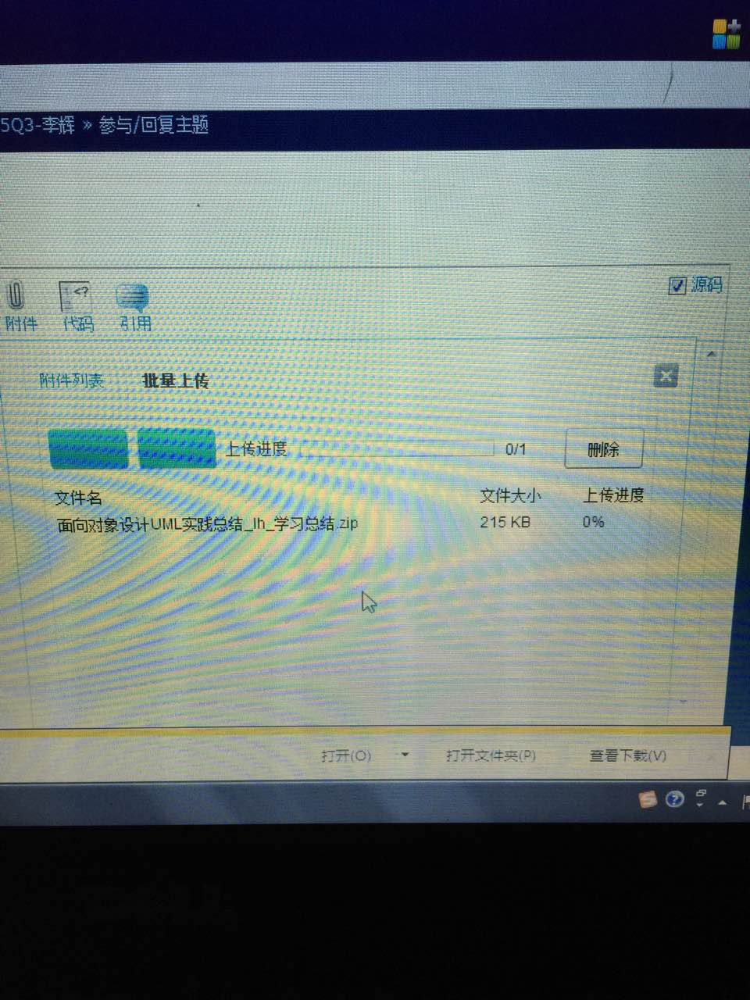
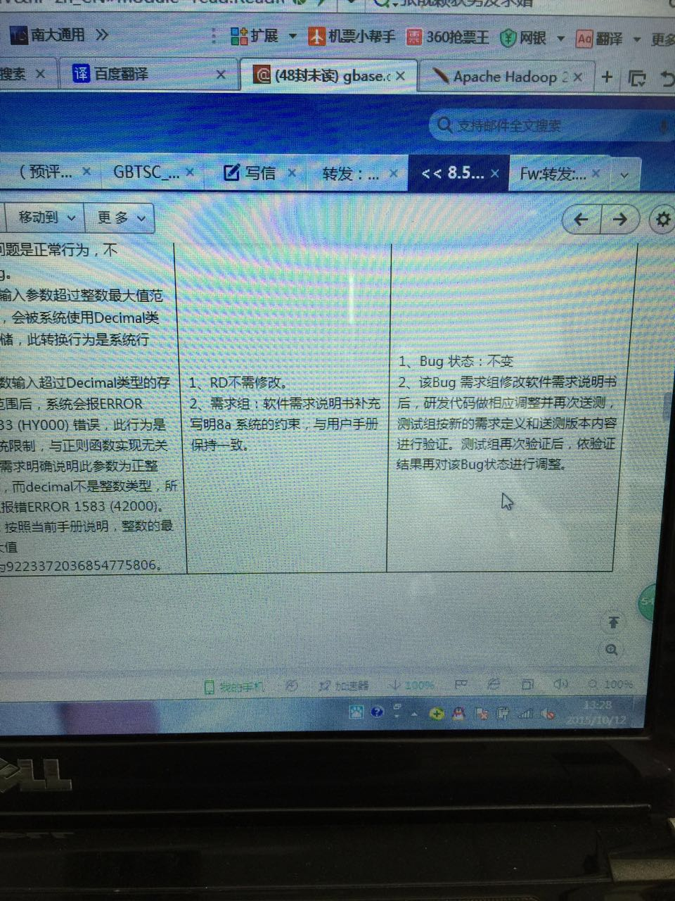
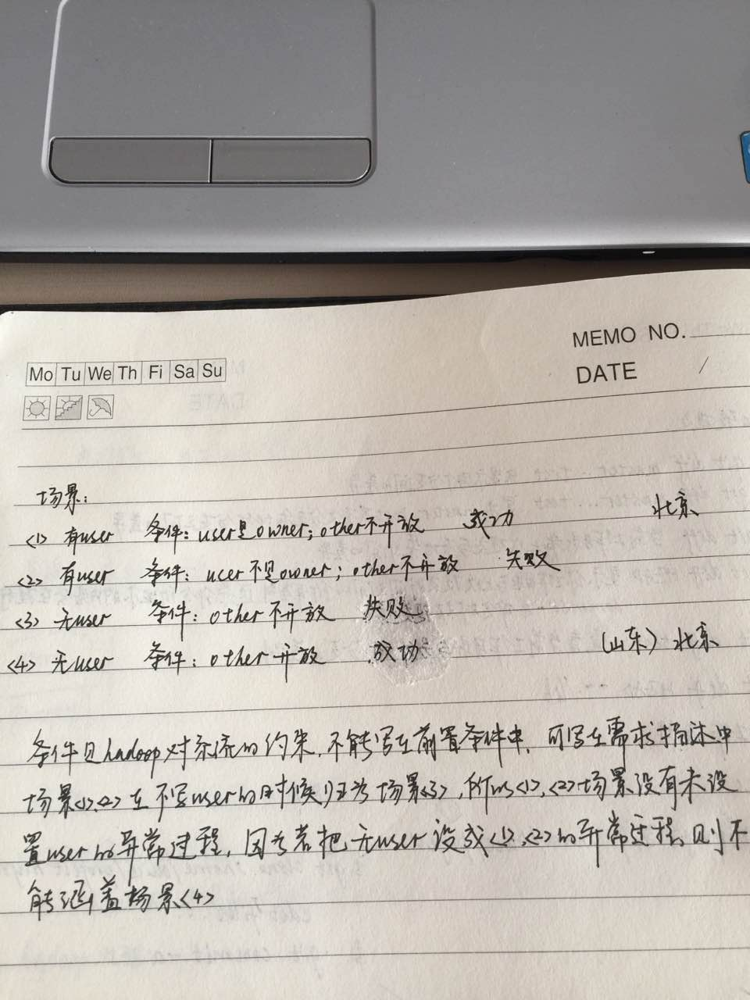
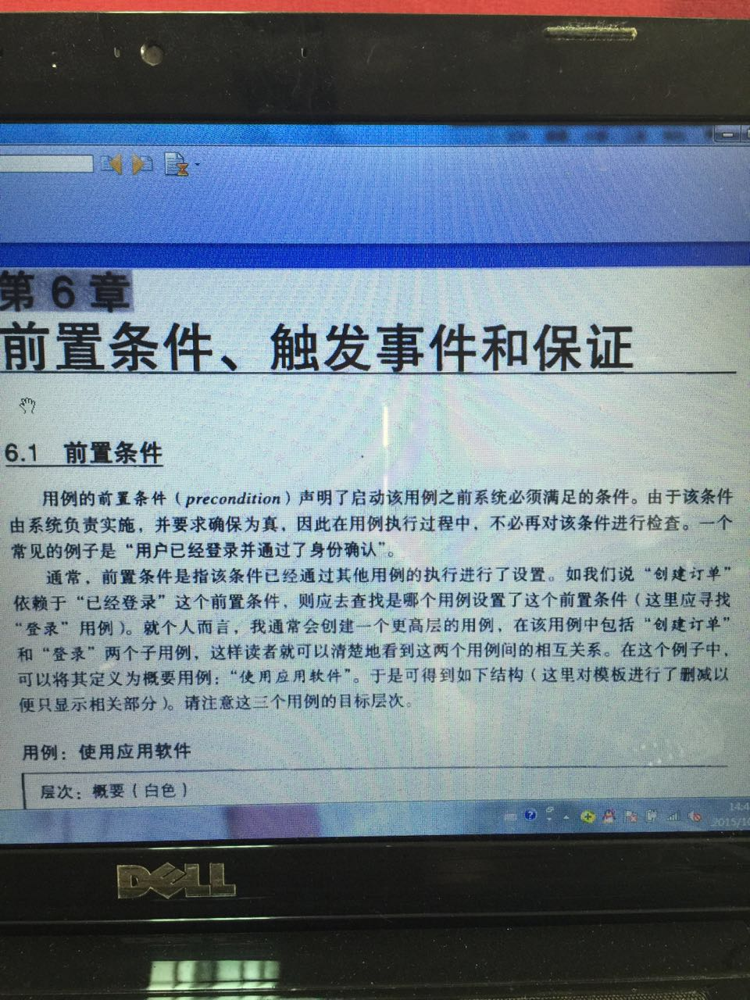

2015-10¶
2015-10-08¶
| 2015-10-08 09:52:34 | 我 | 来了也不找我，还得我去找你 |
| 2015-10-08 10:29:15 | 你 | 我找你说什么啊，不知道说什么就没找 |
| 2015-10-08 10:31:00 | 我 | 汇报工作呀[呲牙] |
| 2015-10-08 10:48:21 | 我 | 洪越提出要把你要回去了 |
| 2015-10-08 10:50:04 | 你 | 你怎么说的 |
| 2015-10-08 10:50:07 | 你 | 不行 |
| 2015-10-08 10:50:36 | 你 | 我闯的祸他背啊 |
| 2015-10-08 10:50:40 | 你 | 哈哈 |
| 2015-10-08 10:50:46 | 你 | 我真是蠢 |
| 2015-10-08 10:50:55 | 我 | 这个季度先在我这 |
| 2015-10-08 10:51:16 | 你 | 喔 |
| 2015-10-08 10:51:28 | 你 | 是10，11，12对吧 |
| 2015-10-08 10:52:42 | 我 | 是 |
| 2015-10-08 10:53:28 | 你 | 那几个bug怎么办，我又闯祸了 |
| 2015-10-08 10:53:46 | 我 | 等今天开完会再说 |
| 2015-10-08 10:58:24 | 我 | 这个不算你闯祸，有问题是正常的 |
| 2015-10-08 10:59:09 | 我 | 你们组新来的是洪越的同事，好像以前他们关系不错 |
| 2015-10-08 11:03:35 | 你 | 知道了 |
| 2015-10-08 11:04:51 | 你 | 没事 |
| 2015-10-08 11:05:37 | 我 | 洪越想让她坐你原来的位置，说好沟通 |
| 2015-10-08 11:05:51 | 我 | 结果让我们的人先占了 |
| 2015-10-08 11:06:42 | 你 | 哈哈，反正也不远 |
| 2015-10-08 11:07:09 | 你 | 我说他怎么那么殷勤，还帮着找主机 |
| 2015-10-08 11:07:15 | 你 | 原来是旧友 |
| 2015-10-08 11:07:31 | 我 | 是 |
| 2015-10-08 11:23:07 | 我 | 鞋挺漂亮 |
| 2015-10-08 13:38:17 | 我 | 你是几号回来的 |
| 2015-10-08 15:04:43 | 我 | 今天说你生气了吗 |
| 2015-10-08 15:09:07 | 你 | 没有 |
| 2015-10-08 15:09:22 | 你 | 你说我我不会生气的，你别生气就好 |
| 2015-10-08 18:09:00 | 你 | 怎么觉得王旭这么稀罕你呢 |
| 2015-10-08 18:09:07 | 你 | 费解 |
| 2015-10-08 18:09:23 | 我 | 什么叫稀罕 |
2015-10-09¶
| 2015-10-09 09:02:38 | 我 | 你说王旭稀罕我是周末回事？ |
| 2015-10-09 09:02:47 | 我 | 他干什么了？ |
| 2015-10-09 09:16:34 | 我 | 又不理我？ |
| 2015-10-09 10:36:54 | 你 | 你看他昨天说，我跟阿娇有单独跟你面谈的机会，他没有， |
| 2015-10-09 10:37:08 | 你 | 没别的事 |
| 2015-10-09 10:37:12 | 我 | 哦 |
| 2015-10-09 11:08:24 | 我 | 昨天忘了问你，看你桌子上有药，是又不舒服了吗？ |
| 2015-10-09 11:46:25 | 你 | 没有，阿娇给我的，她说她买药的时候帮我买的 |
| 2015-10-09 11:53:59 | 我 | 哦，还以为你又疼了 |
| 2015-10-09 12:10:11 | 你 | 没有 |
| 2015-10-09 13:34:24 | 你 | 这两天洪越对我特别好，你有感觉吗？ |
| 2015-10-09 13:40:24 | 我 | 有 |
| 2015-10-09 13:57:59 | 我 | 刚才睡觉了，脑子还没清醒呢 |
| 2015-10-09 13:58:21 | 我 | 你觉得是什么原因？是因为想把你要回去？ |
| 2015-10-09 14:01:08 | 你 | 不知道 |
| 2015-10-09 14:01:20 | 你 | 他一般没那么长远的见识 |
| 2015-10-09 14:01:48 | 你 | 可能他想让我给新来的那个女生提供点帮助 |
| 2015-10-09 14:02:02 | 我 | 可能性非常大 |
| 2015-10-09 14:02:49 | 我 | 昨天他不是带着人家挨个人介绍吗，就是我正训你的时候 |
| 2015-10-09 14:03:13 | 你 | 他今天早上说让我帮她装8a |
| 2015-10-09 14:03:39 | 你 | 说他不会装虚机 |
| 2015-10-09 14:03:52 | 我 | 才怪 |
| 2015-10-09 14:04:23 | 你 | 昨天他开用户说明书会，还给我打电话让我叫她一起参加 |
| 2015-10-09 14:04:26 | 我 | 不过看起来洪越确实挺用心的 |
| 2015-10-09 14:04:28 | 你 | 真恶心 |
| 2015-10-09 14:05:10 | 我 | 是，昨天我就是借着训你正好不理他 |
| 2015-10-09 14:05:12 | 你 | 可能很久没装过了 |
| 2015-10-09 14:05:21 | 你 | 是呢， |
| 2015-10-09 14:05:28 | 你 | 这个女生多大了 |
| 2015-10-09 14:05:38 | 你 | 比我大多少？ |
| 2015-10-09 14:05:59 | 我 | 我查一下我当时记了吗 |
| 2015-10-09 14:06:05 | 我 | 我记得是30多了 |
| 2015-10-09 14:07:04 | 你 | 恩，不管了，早上我把我这的资料都给她了， |
| 2015-10-09 14:07:20 | 我 | 她是07年毕业的 |
| 2015-10-09 14:07:36 | 我 | 硕士 |
| 2015-10-09 14:07:44 | 你 | 不管怎么说，来了个人，洪越就会分一部分精力出去，不会整天针对我了 |
| 2015-10-09 14:08:02 | 你 | 打个电话 |
| 2015-10-09 14:08:04 | 你 | 等 |
| 2015-10-09 14:26:15 | 你 | 大叔，我想这次这个loz的不啰嗦那么多，只写不同的，相同的不过分的说了，您同意吗？ |
| 2015-10-09 14:26:58 | 我 | 行，你先写一个我看看吧 |
| 2015-10-09 14:27:12 | 我 | 问你一个问题，你的生日是哪天的？ |
| 2015-10-09 14:27:20 | 你 | 不告诉你 |
| 2015-10-09 14:27:54 | 我 | 说吧，我觉得好像应该就是附近 |
| 2015-10-09 14:28:11 | 你 | 没有，早呢 |
| 2015-10-09 14:28:20 | 你 | 不过是冬天 |
| 2015-10-09 14:30:16 | 我 | 我怎么记得你是天蝎的 |
| 2015-10-09 14:33:01 | 你 | 你不是对星座不感兴趣嘛 |
| 2015-10-09 14:33:07 | 你 | 我是射手座的 |
| 2015-10-09 14:35:28 | 我 | 就是因为不感兴趣才记错嘛 |
| 2015-10-09 14:38:16 | 你 | 你是白羊座的，我知道 |
| 2015-10-09 14:39:37 | 我 | 是，面试时我记过你的生日，后来给忘了 |
| 2015-10-09 16:51:17 | 你 | 好好谈，好好稀罕稀罕他 |
| 2015-10-09 16:51:35 | 我 | 是 |
| 2015-10-09 17:01:09 | 你 | 这么快就稀罕够了？ |
| 2015-10-09 17:01:41 | 我 | 他没话说了 |
| 2015-10-09 17:03:40 | 你 | 唉，无语 |
| 2015-10-09 17:58:28 | 我 | 你几点回家？ |
| 2015-10-09 17:58:54 | 你 | 半点吧，怎么了？ |
| 2015-10-09 17:59:12 | 我 | 没事，就是问问 |
| 2015-10-09 17:59:25 | 你 | 不是面谈呢吗？ |
| 2015-10-09 17:59:28 | 你 | 累了吧 |
| 2015-10-09 17:59:54 | 我 | 是，有点不舒服，耳鸣 |
| 2015-10-09 18:00:55 | 你 | 哈哈，你应该找个女生，换着点 |
| 2015-10-09 18:01:29 | 我 | 再找你谈？ |
| 2015-10-09 18:01:47 | 你 | 杨丽颖啊 |
| 2015-10-09 18:02:05 | 你 | 你就3个资源，昨天浪费了2个 |
| 2015-10-09 18:02:22 | 我 | 就喜欢你一个 |
| 2015-10-09 18:02:52 | 你 | 哇哦，这么赤裸裸的表白 |
| 2015-10-09 18:03:09 | 我 | 我一直这么说呀 |
| 2015-10-09 18:03:18 | 我 | 又不是第一次说 |
| 2015-10-09 18:03:40 | 你 | 哈哈 |
| 2015-10-09 18:03:47 | 你 | 逗你呢 |
| 2015-10-09 18:04:14 | 我 | 知道你逗我呢 |
| 2015-10-09 18:04:31 | 你 | 我看你也是耳鸣了 |
| 2015-10-09 18:04:59 | 我 | 你这都能看出来 |
| 2015-10-09 18:05:24 | 你 | 你不但耳鸣了，脑袋也鸣了 |
| 2015-10-09 18:05:42 | 你 | 可怜的老尹，太不得脸了 |
| 2015-10-09 18:05:47 | 你 | 傻了吧 |
| 2015-10-09 18:07:18 | 我 | 是 |
| 2015-10-09 18:24:08 | 我 | 不舒服，我先走了 |
| 2015-10-09 18:24:34 | 你 | 恩 |
| 2015-10-09 18:24:46 | 你 | See u tomorrow |
| 2015-10-09 18:25:59 | 我 | bye |
2015-10-10¶
| 2015-10-10 09:22:10 | 我 | 我昨天给你发的邮件看见了吗 |
| 2015-10-10 09:26:17 | 你 | 看见了 |
| 2015-10-10 09:26:39 | 你 | 昨天严丹让我今早帮她记会议纪要，你知道吗？ |
| 2015-10-10 09:27:07 | 我 | 我知道，她主动提的 |
| 2015-10-10 09:28:31 | 我 | 今天抽空我要和你说点事情 |
| 2015-10-10 09:28:46 | 你 | 哦，严重吗？ |
| 2015-10-10 09:29:21 | 我 | 不是你犯错 |
| 2015-10-10 09:29:25 | 你 | 我没得罪谁吧 |
| 2015-10-10 09:29:43 | 我 | 是这三个月怎么安排 |
| 2015-10-10 09:32:06 | 你 | 好 |
| 2015-10-10 16:05:44 | 我 | 今天太忙了，还说抽空找你聊天呢 |
| 2015-10-10 16:10:51 | 我 | 你晚上几点走？ |
| 2015-10-10 16:57:24 | 你 | 你怎么不吃 |
| 2015-10-10 17:02:43 | 我 | 没空呀 |
| 2015-10-10 17:09:09 | 你 | 现在有空啦？ |
| 2015-10-10 17:09:46 | 我 | 喘口气 |
| 2015-10-10 17:10:22 | 你 | 说啥呢？ |
| 2015-10-10 17:10:45 | 我 | 不告诉你[呲牙] |
| 2015-10-10 17:22:38 | 我 | 接着谈 |
| 2015-10-10 18:19:35 | 我 | 我正在看，别着急 |
| 2015-10-10 18:28:04 | 你 | 不急，谁说我着急接，[惊讶] |
| 2015-10-10 18:28:22 | 你 | 可是，可是，我想回家了 |
2015-10-11¶
| 2015-10-11 17:28:14 | 你 |  |
| 2015-10-11 17:28:30 | 你 | 老王，为什么传不上去呢？ |
| 2015-10-11 17:29:31 | 我 | 是不是网不好，要不就换个浏览器 |
| 2015-10-11 17:30:24 | 你 | 我在单位用360不行，回家了用ie 也不行 |
| 2015-10-11 17:30:40 | 你 | How to do |
| 2015-10-11 17:30:49 | 我 | 你有谷歌浏览器吗 |
| 2015-10-11 17:31:02 | 你 | 没有 |
| 2015-10-11 17:31:08 | 你 | 不用这么麻烦吧 |
| 2015-10-11 17:31:43 | 我 | 要不等明天上班我给你看看 |
| 2015-10-11 17:32:04 | 你 | 我再弄弄 |
| 2015-10-11 17:32:19 | 我 | 好的 |
| 2015-10-11 17:35:50 | 你 | 干嘛呢？ |
| 2015-10-11 17:36:11 | 你 | 还是不行，你明天帮我看看吧 |
| 2015-10-11 17:36:23 | 你 | 我以为是网太慢呢 |
| 2015-10-11 17:36:25 | 我 | 没事，我明天帮你看看吧 |
| 2015-10-11 17:36:32 | 我 | 应该不是 |
| 2015-10-11 17:36:37 | 你 | 可是我家的网不慢 |
| 2015-10-11 17:36:50 | 你 | 明天看吧 |
| 2015-10-11 17:36:57 | 我 | 我还是怀疑浏览器 |
| 2015-10-11 17:37:09 | 我 | 我从来不用IE |
| 2015-10-11 17:37:16 | 你 | 谷歌浏览器得下载是吗？ |
| 2015-10-11 17:37:21 | 我 | 是 |
| 2015-10-11 17:37:33 | 你 | 我也不用，这不是360不行嘛 |
| 2015-10-11 17:37:46 | 我 | 360就是IE |
| 2015-10-11 17:37:57 | 你 | 啊！ |
| 2015-10-11 17:38:07 | 你 | [偷笑] |
| 2015-10-11 17:38:12 | 你 | [流汗] |
| 2015-10-11 17:39:43 | 我 | 你明天用我的谷歌试一下 |
| 2015-10-11 17:40:29 | 你 | 你让我就用，明天我问问阿娇，然后实在没办法再找你 |
| 2015-10-11 17:40:50 | 你 | 需求组新来的那个同事怎么样？ |
| 2015-10-11 17:41:04 | 我 | 你说哪方面 |
| 2015-10-11 17:41:53 | 你 | 各方面 |
| 2015-10-11 17:42:12 | 我 | 都很一般吧 |
| 2015-10-11 17:42:22 | 我 | 不过感觉挺有心眼的 |
| 2015-10-11 17:42:37 | 你 | 啊？ |
| 2015-10-11 17:42:49 | 你 | 我就比较在意这个，有心眼也没事 |
| 2015-10-11 17:43:01 | 你 | 就是别是歪心眼 |
| 2015-10-11 17:43:17 | 我 | 面试的时候会猜我想听什么 |
| 2015-10-11 17:43:31 | 你 | 当初为什么要了，是洪越推荐的缘故吗 |
| 2015-10-11 17:43:54 | 你 | 我算是有心眼的嘛？我得看看你的标准 |
| 2015-10-11 17:43:57 | 我 | 老杨让我替他去二面，说差不多就收了 |
| 2015-10-11 17:44:05 | 你 | 哦， |
| 2015-10-11 17:44:08 | 你 | 不错 |
| 2015-10-11 17:44:10 | 我 | 你不算 |
| 2015-10-11 17:45:02 | 你 | 需求组也不好招 |
| 2015-10-11 17:45:03 | 你 | 我看老杨也懒得管 |
| 2015-10-11 17:45:15 | 你 | 懒得磨磨唧唧 |
| 2015-10-11 17:45:20 | 我 | 是 |
| 2015-10-11 17:45:29 | 我 | 每次洪越都有理由 |
| 2015-10-11 17:45:47 | 你 | 你们组新来的同事长得忒难看 |
| 2015-10-11 17:45:55 | 你 | [调皮] |
| 2015-10-11 17:46:09 | 我 | 马大姐推荐的，王旭原来的同事 |
| 2015-10-11 17:46:41 | 你 | 是呢，我觉得也是，上次有个他跟老田一起面，他就没看上，他总有理由 |
| 2015-10-11 17:46:53 | 你 | 这把招来这个看怎么样吧 |
| 2015-10-11 17:47:58 | 你 | 对待新同事要做自己，坚决不涉党争，这个方针可好？ |
| 2015-10-11 17:48:30 | 我 | 好也不好 |
| 2015-10-11 17:50:15 | 你 | 我特想知道洪越怎么跟你说的把我要回去 |
| 2015-10-11 17:50:51 | 我 | 他说 Q4的 PBC 考核要不要把你算需求组的 |
| 2015-10-11 17:51:23 | 我 | 当时老杨说我带你所以和你签 PBC |
| 2015-10-11 17:52:07 | 你 | 他突然提这个干嘛，有病 |
| 2015-10-11 17:52:47 | 我 | 不知道，可能就是想让你回去吧 |
| 2015-10-11 17:52:55 | 你 | 其实早晚都得回去，他这个时间提也不为过， |
| 2015-10-11 17:53:31 | 你 | 那个女孩应该是那种不内向的，挺爱说，嗓门也大 |
| 2015-10-11 17:54:07 | 我 | 我觉得是那种特有心眼的 |
| 2015-10-11 17:54:13 | 你 | 昨天下班她叫我一起，后来有点事就没跟她一起走 |
| 2015-10-11 17:54:28 | 你 | 你觉得是那就肯定是了 |
| 2015-10-11 17:54:41 | 我 | 我面试的时候给她下了一个套 |
| 2015-10-11 17:54:45 | 你 | 我非常相信你看人的水平 |
| 2015-10-11 17:54:48 | 你 | 哈哈 |
| 2015-10-11 17:55:18 | 你 | 唉，被你面试也算是职场一段很爽的经历 |
| 2015-10-11 17:55:48 | 我 | 让她猜错了，后来她就找各种理由 |
| 2015-10-11 17:56:19 | 你 | 之所以问就是想从你这听听这是何方神圣，同时过了你跟洪越两关 |
| 2015-10-11 17:56:34 | 你 | 是嘛 |
| 2015-10-11 17:56:43 | 我 | 一面是老田 |
| 2015-10-11 17:56:53 | 你 | 哦，老田啊 |
| 2015-10-11 17:56:56 | 你 | 好吧 |
| 2015-10-11 17:57:10 | 你 | 老田比洪越好一些 |
| 2015-10-11 17:57:41 | 我 | 我们一致的看法是能干活，没有理论基础，基础概念不清。就是因为是洪越介绍而且需求组缺人才同意的 |
| 2015-10-11 17:58:03 | 你 | 面了多长时间 |
| 2015-10-11 17:58:10 | 我 | 半小时吧 |
| 2015-10-11 17:58:11 | 你 | 跟你问个问题 |
| 2015-10-11 17:58:17 | 我 | 说 |
| 2015-10-11 17:59:36 | 你 | 是不是咱们单位的需求组的理论都比较强，有这种基础的尤其是你，洪越跟老杨，老田也可以 |
| 2015-10-11 18:00:05 | 你 | 是不是做软件开发的研发经理都是这个水平啊 |
| 2015-10-11 18:00:11 | 我 | 不是 |
| 2015-10-11 18:00:39 | 你 | 我从来没想过会进一个软件公司，都是缘分呐，哈哈 |
| 2015-10-11 18:01:31 | 我 | 老田的理论底子不多 |
| 2015-10-11 18:01:49 | 你 | 是，有感觉 |
| 2015-10-11 18:02:05 | 你 | 老田不会以后一直带测试吧？ |
| 2015-10-11 18:02:12 | 我 | 他就是干活多，经验多，然后人又肯吃苦学，不懂就问，还有就是敢说 |
| 2015-10-11 18:02:22 | 你 | 哈哈， |
| 2015-10-11 18:02:27 | 我 | 不会，老杨好像对他有安排 |
| 2015-10-11 18:02:59 | 你 | 是个感性的汉子 |
| 2015-10-11 18:03:13 | 我 | 田的很多认识其实是错误的，要不然也不会老打架了 |
| 2015-10-11 18:03:22 | 你 | 是 |
| 2015-10-11 18:04:40 | 你 | 再问你个问题 |
| 2015-10-11 18:04:53 | 你 | 你说有心眼是好事还是坏事？ |
| 2015-10-11 18:05:17 | 我 | 我先问你，你觉得我是不是很有心眼 |
| 2015-10-11 18:05:19 | 你 | 这是个哲学问题 |
| 2015-10-11 18:05:49 | 你 | 我没这么想过你，就是你想的会很全面 |
| 2015-10-11 18:06:02 | 你 | 有心眼是贬义的吧 |
| 2015-10-11 18:06:04 | 我 | 一个类似的问题，菜刀是工具还是凶器 |
| 2015-10-11 18:06:28 | 你 | 看怎么使 |
| 2015-10-11 18:06:43 | 我 | 所以关键还是看人 |
| 2015-10-11 18:06:48 | 你 | 是 |
| 2015-10-11 18:06:56 | 我 | 看怎么使心眼 |
| 2015-10-11 18:07:01 | 你 | 我就从来没觉得你是huairen |
| 2015-10-11 18:07:04 | 你 | 坏人 |
| 2015-10-11 18:08:45 | 我 | 分辨一个人好坏，首先看能不能担当，其次看是不是损人利已 |
| 2015-10-11 18:09:10 | 你 | 恩 |
| 2015-10-11 18:09:20 | 你 | 看来我是大好人 |
| 2015-10-11 18:09:21 | 你 | 哈哈 |
| 2015-10-11 18:11:56 | 我 | 是 |
{kind=link}
2015-10-12¶
| 2015-10-12 09:32:36 | 我 | 你最后加上去了？ |
| 2015-10-12 09:40:31 | 你 | 恩， |
| 2015-10-12 10:53:17 | 你 | 发错了 |
| 2015-10-12 11:44:56 | 我 | 你别往心里去 |
| 2015-10-12 11:45:41 | 我 | 我是故意把事情闹大的 |
| 2015-10-12 11:47:22 | 我 | 这事怨我，本来上周应该和你说的 |
| 2015-10-12 11:48:03 | 你 | 没事 |
| 2015-10-12 11:48:09 | 你 | 你别生气了 |
| 2015-10-12 11:51:46 | 我 | 我没生气，只是装装样子 |
| 2015-10-12 11:55:44 | 我 | 晚上我还有事，明天抽空和你说说吧 |
| 2015-10-12 11:56:05 | 你 | 不用说 |
| 2015-10-12 11:56:12 | 我 | 这事不大 |
| 2015-10-12 11:56:21 | 你 | 我知道，再说，你发火也是应该的 |
| 2015-10-12 11:56:27 | 你 | 本来就是我不对 |
| 2015-10-12 11:57:10 | 我 | 不是说这件事情，是说这类事情的原则和咱们部门内的政治关系 |
| 2015-10-12 11:57:29 | 我 | 我要是早说就没这事了 |
| 2015-10-12 11:57:47 | 我 | 这事责任不在你，是测试他们 |
| 2015-10-12 11:58:28 | 我 | 我发火就是让洪越和严丹站在我这边 |
| 2015-10-12 11:58:49 | 你 | 本来就是我的错，没事，在你之前，洪越已经说过我了 |
| 2015-10-12 11:59:04 | 你 | 但不是因为这个，是另一个 |
| 2015-10-12 11:59:12 | 你 | Hdfs的 |
| 2015-10-12 11:59:26 | 你 | 我知道 |
| 2015-10-12 12:00:14 | 我 | 错是测试，他们诱使你犯错 |
| 2015-10-12 12:00:42 | 我 | 最多你是不懂而已 |
| 2015-10-12 12:00:52 | 我 | 还是你太善良 |
| 2015-10-12 12:01:28 | 我 | 没想到他们会坑你 |
| 2015-10-12 12:09:10 | 你 | 你别安慰我了，想想怎么办吧，我没事 |
| 2015-10-12 13:22:46 | 我 | 中午睡觉了吗 |
| 2015-10-12 13:22:54 | 你 | 没睡着 |
| 2015-10-12 13:23:02 | 你 | 眯着 |
| 2015-10-12 13:23:47 | 我 | 因为我训你 |
| 2015-10-12 13:24:16 | 你 | 我在想以后要长记性 |
| 2015-10-12 13:24:19 | 你 | 少犯错 |
| 2015-10-12 13:26:01 | 我 | 你的方法不对 |
| 2015-10-12 13:26:14 | 我 | 回来我和你讲吧 |
| 2015-10-12 13:28:11 | 你 | 耿燕那个邮件关于27915的描述你看了吗？ |
| 2015-10-12 13:28:29 | 你 |  |
| 2015-10-12 13:28:41 | 你 | 研发需要改代码吗？ |
| 2015-10-12 13:32:24 | 我 | 我还没看，待会回去看 |
| 2015-10-12 13:39:14 | 我 | 中午你哭了吗？ |
| 2015-10-12 13:40:22 | 你 | 没有 |
| 2015-10-12 13:40:31 | 你 | 没哭， |
| 2015-10-12 13:43:42 | 我 | 只是心里不好受？ |
| 2015-10-12 13:46:37 | 你 | 我想了很多 |
| 2015-10-12 13:47:07 | 你 | 刚开始的时候挺害怕的，看你那么生气我才意识到事情的严重性 |
| 2015-10-12 13:47:37 | 你 | 然后，我听你向着我说话了，我想你还没恨死我 |
| 2015-10-12 13:53:00 | 我 | 怎么可能恨你 |
| 2015-10-12 14:48:31 | 我 | redmine的事你不用管了，回来让严丹处理了 |
| 2015-10-12 14:48:58 | 你 | 好 |
| 2015-10-12 16:13:32 | 你 | 我今天是不是把你气住了 |
| 2015-10-12 17:13:12 | 你 | 你今天去华苑真有事吗？ |
| 2015-10-12 17:57:02 | 我 | 今天我没生气，只是借着这件事说测试，我特别烦他们过来瞎指挥，好像都得听他们似得 |
| 2015-10-12 17:57:27 | 你 | 那就好 |
| 2015-10-12 17:57:59 | 我 | 私事也就算了，公事居然绕过主管，直接命令 |
| 2015-10-12 17:58:25 | 我 | 晚上我是真有事，你以为我是特意想搭车？ |
| 2015-10-12 17:58:40 | 我 | 我还真的想搭你的车呢 |
| 2015-10-12 17:58:58 | 你 | 真有事就真有事 |
| 2015-10-12 17:59:12 | 你 | 比假有事强 |
| 2015-10-12 18:01:28 | 我 | 哦，我要是假有事呢 |
| 2015-10-12 18:05:01 | 我 | 不管真有事还是假有事都想坐你的车 |
| 2015-10-12 18:06:23 | 你 | 假有事我又得觉得对不住你了， |
| 2015-10-12 18:09:50 | 我 | 唉，你怎么老这么客气 |
{kind=link}
2015-10-13¶
| 2015-10-13 10:00:52 | 我 | 有空吗 |
| 2015-10-13 10:18:21 | 我 | 忙什么呢？ |
| 2015-10-13 10:27:03 | 你 | 我来给洪越开会 |
| 2015-10-13 10:27:16 | 我 | 什么会？ |
| 2015-10-13 10:27:54 | 你 | 企管的测试设计 |
| 2015-10-13 10:28:11 | 我 | 哦，那你先忙吧 |
| 2015-10-13 10:28:27 | 你 | 我不忙 |
| 2015-10-13 10:28:32 | 你 | 我想跟你聊天呢 |
| 2015-10-13 10:28:56 | 我 | 好呀，反正我也没事，无聊中 |
| 2015-10-13 10:29:07 | 你 | 我早上忘带手机了，把我对象送过去后，回了趟家拿了一次 |
| 2015-10-13 10:29:59 | 我 | 还好，今天洪越就把手机忘家里了 |
| 2015-10-13 10:31:14 | 你 | 哈哈 |
| 2015-10-13 10:35:12 | 你 | 这个马姐真是咄咄逼人啊 |
| 2015-10-13 10:35:21 | 你 | 你能看到我的朋友圈吗？ |
| 2015-10-13 10:35:43 | 我 | 能，怎么了 |
| 2015-10-13 10:46:54 | 你 | 那就好 |
| 2015-10-13 10:47:29 | 我 | 有什么问题吗 |
| 2015-10-13 10:58:24 | 你 | 等 |
| 2015-10-13 10:59:05 | 你 | 马姐说她看不了我的朋友圈了，然后质问我为什么屏蔽了她 |
| 2015-10-13 10:59:09 | 你 | 我晕 |
| 2015-10-13 10:59:27 | 你 | 我都不知道，可能最开始的时候我把他屏蔽了 |
| 2015-10-13 10:59:35 | 我 | 还带这样的 |
| 2015-10-13 10:59:51 | 我 | 就不想让她看 |
| 2015-10-13 11:00:20 | 你 | 是呢，然后blabla 说了半天 |
| 2015-10-13 11:00:40 | 我 | 别理他 |
| 2015-10-13 11:00:41 | 你 | 说什么没有人整天盯着别人的生活什么de |
| 2015-10-13 11:00:45 | 你 | 真能说 |
| 2015-10-13 11:01:41 | 我 | 是 |
| 2015-10-13 11:01:54 | 你 | 哈哈 |
| 2015-10-13 11:01:58 | 我 | 而且什么话都敢说 |
| 2015-10-13 11:02:06 | 你 | 当老王遇上老马 |
| 2015-10-13 11:02:17 | 你 | 你知道公司禁烟的事吗 |
| 2015-10-13 11:02:40 | 我 | 不允许了吗？不会吧 |
| 2015-10-13 11:02:42 | 你 | 马姐给高军发了一篇长文， |
| 2015-10-13 11:03:11 | 你 | 然后高军把我当成刘辉把文章发给我了 |
| 2015-10-13 11:03:14 | 你 | 哈哈 |
| 2015-10-13 11:04:05 | 我 | 赶紧给我转一份，我瞻仰一下 |
| 2015-10-13 11:04:27 | 你 | 好 |
| 2015-10-13 11:06:11 | 你 | 而且cc 了大崔 |
| 2015-10-13 11:06:30 | 我 | 大崔抽烟 |
| 2015-10-13 11:06:37 | 我 | 她不知道吗 |
| 2015-10-13 11:12:48 | 你 | 不知道他知不知道 |
| 2015-10-13 11:12:59 | 你 | 我就说他这张嘴比脑子快 |
| 2015-10-13 11:13:04 | 你 | 与你相反 |
| 2015-10-13 11:15:45 | 我 | no zuo no die |
| 2015-10-13 11:15:53 | 你 | 哈哈 |
| 2015-10-13 11:16:04 | 你 | 这种人太可怕了 |
| 2015-10-13 11:16:14 | 你 | 不可怕，觉得好笑 |
| 2015-10-13 11:16:34 | 我 | 你该吃饭了吧 |
| 2015-10-13 11:16:55 | 你 | 半点 |
| 2015-10-13 11:17:02 | 你 | 你们什么时候吃 |
| 2015-10-13 11:17:06 | 我 | 好的 |
| 2015-10-13 11:17:18 | 我 | 我不知道，今天我没去 |
| 2015-10-13 11:17:25 | 我 | 在医院呢 |
| 2015-10-13 11:18:40 | 你 | 啊，你咋了 |
| 2015-10-13 11:18:42 | 你 | 晕 |
| 2015-10-13 11:18:51 | 你 | 怎么在医院了？ |
| 2015-10-13 11:18:57 | 你 | 怎么了 |
| 2015-10-13 11:19:20 | 我 | 腿疼，早上走不了路了 |
| 2015-10-13 11:19:40 | 你 | 是什么毛病啊 |
| 2015-10-13 11:19:46 | 你 | 着凉了吗？ |
| 2015-10-13 11:19:51 | 你 | 我都不知道 |
| 2015-10-13 11:19:58 | 你 | 以为你去工大了呢 |
| 2015-10-13 11:20:02 | 我 | 韧带拉伤 |
| 2015-10-13 11:20:07 | 我 | 老毛病了 |
| 2015-10-13 11:20:18 | 我 | 十一回来就不好 |
| 2015-10-13 11:20:35 | 你 | 那无缘无故就疼了吗？ |
| 2015-10-13 11:20:42 | 你 | 是昨天走的多了？ |
| 2015-10-13 11:20:45 | 我 | 昨天走路就不行了 |
| 2015-10-13 11:20:58 | 我 | 应该是十一累到了 |
| 2015-10-13 11:21:04 | 我 | 自己没注意 |
| 2015-10-13 11:21:19 | 我 | 想坚持到开完会 |
| 2015-10-13 11:21:28 | 你 | 哎呀，怎么这样 |
| 2015-10-13 11:21:49 | 你 | 你知道有毛病就别累着啊 |
| 2015-10-13 11:22:04 | 我 | 我不打球就是因为这个 |
| 2015-10-13 11:22:18 | 你 | 而且自己得注意，就自己能掌握好分寸 |
| 2015-10-13 11:22:25 | 你 | 原来是这样 |
| 2015-10-13 11:22:33 | 你 | 你就自己在医院吗？ |
| 2015-10-13 11:22:44 | 我 | 我妹送我来的 |
| 2015-10-13 11:22:45 | 你 | 去医院要怎么治啊 |
| 2015-10-13 11:22:52 | 你 | 明天能上班吗？ |
| 2015-10-13 11:22:58 | 你 | 我晕 |
| 2015-10-13 11:23:28 | 我 | 大夫也没好办法，就是让休息 |
| 2015-10-13 11:23:46 | 你 | 就伤使 |
| 2015-10-13 11:23:57 | 你 | 你怎么弄的，也不是运动员 |
| 2015-10-13 11:24:02 | 我 | 你先别说出去，我们组的我还没告诉呢 |
| 2015-10-13 11:24:30 | 我 | 很早以前有过拉伤，就是打球闹的 |
| 2015-10-13 11:24:38 | 你 | 我不说 |
| 2015-10-13 11:24:55 | 我 | 后来不玩了也没犯，就没在意 |
| 2015-10-13 11:24:56 | 你 | 这种消息不应该从我嘴里说出去 |
| 2015-10-13 11:25:04 | 你 | 那你以后别玩了 |
| 2015-10-13 11:25:14 | 我 | 前一阵打球又伤了 |
| 2015-10-13 11:25:34 | 我 | 自己没上心就这样了 |
| 2015-10-13 11:26:01 | 我 | 以前他们打，我也是不去的 |
| 2015-10-13 11:26:24 | 你 | 我说你怎么突然不打了 |
| 2015-10-13 11:26:25 | 我 | 后来就是想陪你玩，去的才多了 |
| 2015-10-13 11:27:17 | 我 | 最后两次去我都是缠着绷带去的 |
| 2015-10-13 11:29:05 | 我 | 你去吃饭吧，下午再聊 |
| 2015-10-13 11:29:26 | 你 | 好，你怎么办啊 |
| 2015-10-13 11:29:31 | 你 | 都是我不好 |
| 2015-10-13 11:29:41 | 我 | 和你没关系 |
| 2015-10-13 11:29:52 | 我 | 是我自己没上心 |
| 2015-10-13 11:30:46 | 我 | 大夫说歇一阵就好，我正在做理疗，已经好多了 |
| 2015-10-13 11:33:25 | 你 | 恩恩，你以后注意吧 |
| 2015-10-13 11:33:39 | 我 | 是，听你的 |
| 2015-10-13 11:34:10 | 你 | 随着年龄增大，都不好使了，得注意保养 |
| 2015-10-13 11:34:17 | 你 | 这些事靠别人说是不行的 |
| 2015-10-13 11:34:31 | 你 | 得自己上心 |
| 2015-10-13 11:34:47 | 我 | 是 |
| 2015-10-13 11:35:25 | 你 | 你说是不 |
| 2015-10-13 11:35:41 | 我 | 你说的没错 |
| 2015-10-13 11:36:04 | 你 | 我爸爸就是，好多毛病，自己一点自律能力没有，刚开始我总说他，好话赖话，后来就放弃他了 |
| 2015-10-13 11:36:19 | 你 | 当然你比他强多了 |
| 2015-10-13 11:36:20 | 我 | 哈哈 |
| 2015-10-13 11:36:26 | 你 | 就是这么个理 |
| 2015-10-13 11:36:35 | 我 | 你放心吧，我一定听你的 |
| 2015-10-13 11:36:36 | 你 | 我也挺能说的哈 |
2015-10-17¶
| 2015-10-17 11:25:42 | 你 |  |
| 2015-10-17 11:25:51 | 你 | 你看看对吗？ |
| 2015-10-17 11:26:33 | 你 | 一会儿我跟我对象吃饭去，下午等我消息，别回了 |
{kind=link}
2015-10-19¶
| 2015-10-19 11:33:12 | 我 | 你今天怎么了？看着你好怪 |
| 2015-10-19 12:04:02 | 我 | 你病了吗？ |
| 2015-10-19 12:32:00 | 我 | 你到底怎么了？ |
| 2015-10-19 12:32:43 | 你 | 我没事 |
| 2015-10-19 12:32:56 | 我 | 你肯定有事 |
| 2015-10-19 12:33:11 | 我 | 平时你不是这样的 |
| 2015-10-19 12:35:03 | 你 | 我说了我没事，你让我自己待会 |
| 2015-10-19 12:36:01 | 我 | 到底怎么了，谁欺负你了 |
| 2015-10-19 12:48:18 | 我 | 亲，看着你这样我好难受 |
| 2015-10-19 12:51:26 | 你 | 我先跟你说的时候，会跟你说，不想说的话你就别问了 |
| 2015-10-19 12:55:09 | 我 | 那要这样就算了 |
| 2015-10-19 13:01:11 | 我 | 每组要给PBC最后一名写原因 |
| 2015-10-19 13:14:25 | 我 | 幸亏你不是最后一名 |
| 2015-10-19 13:18:46 | 你 | 怎么了？ |
| 2015-10-19 13:21:42 | 我 | 这次上面要最后一名的情况说明，你不是在我们组里评嘛。幸好你不是最后一名 |
| 2015-10-19 13:22:11 | 我 | 我觉得他们可能是要从中间找一个D |
| 2015-10-19 13:22:53 | 我 | 你写的怎么样了？ |
| 2015-10-19 13:30:32 | 你 | 还在写 |
| 2015-10-19 13:30:57 | 你 | 要是d 会被开除吗 |
| 2015-10-19 13:31:29 | 我 | 不会 |
| 2015-10-19 14:48:50 | 你 |  |
| 2015-10-19 14:49:12 | 你 | 这样看，把通过http 协议了解hdfs |
| 2015-10-19 14:49:24 | 你 | 写在前置条件中合适吗？ |
| 2015-10-19 14:49:50 | 我 | 不是写在前置条件中 |
| 2015-10-19 14:50:22 | 你 | 上午不是说这这里吗？ |
| 2015-10-19 14:50:36 | 我 | 可以考虑写在运行环境中 |
| 2015-10-19 14:50:42 | 你 | 哦 |
| 2015-10-19 14:50:50 | 我 | 这个是你后面所有需求的前置条件 |
| 2015-10-19 14:50:58 | 你 | 反正我觉得写这里不合适 |
| 2015-10-19 14:51:00 | 你 | 对啊 |
| 2015-10-19 14:51:11 | 你 | 上午说的写这里 |
| 2015-10-19 14:51:21 | 你 | 我想就写呗，你说了算 |
| 2015-10-19 14:51:29 | 我 | 我是想写到前面 |
| 2015-10-19 14:53:17 | 你 | 那就接着改，这算系统对外界的要求吧， |
| 2015-10-19 14:55:03 | 我 | 对，加在第3章里 |
| 2015-10-19 16:02:16 | 我 | 这次报的阿娇 |
| 2015-10-19 16:02:59 | 你 | 哦，下次可能是我 |
| 2015-10-19 16:03:10 | 我 | 不会 |
| 2015-10-19 16:03:28 | 我 | 这次也不一定是D |
| 2015-10-19 16:04:10 | 你 | 恩，你评吧，我相信你 |
| 2015-10-19 16:04:17 | 你 | 这没什么， |
| 2015-10-19 16:04:45 | 我 | 你今天怎么了 |
| 2015-10-19 16:05:44 | 你 | 不想跟你说 |
| 2015-10-19 16:05:50 | 你 | 有两件事 |
| 2015-10-19 16:05:55 | 你 | 都不想说 |
| 2015-10-19 16:06:17 | 我 | 家里的事还是你自己？ |
| 2015-10-19 16:06:38 | 你 | 我自己，还有一件关于你的 |
| 2015-10-19 16:07:01 | 我 | 哦，我是当事人还不让我知道 |
| 2015-10-19 16:09:11 | 你 | 我在消化 |
| 2015-10-19 16:09:47 | 我 | 就你自己一个人？为什么不让我和你一起处理？ |
| 2015-10-19 16:10:49 | 你 | 你刚才讲的特别精彩 |
| 2015-10-19 16:11:08 | 你 | 是我能听懂的为数不多的演讲 |
| 2015-10-19 16:11:33 | 我 | 我准备了一天呢 |
| 2015-10-19 16:11:45 | 我 | 昨天就一直琢磨这事 |
| 2015-10-19 16:12:01 | 我 | 已经在心里模拟好几遍了 |
| 2015-10-19 16:12:16 | 你 | 一点不像有准备的，像新手一说的 |
| 2015-10-19 16:12:21 | 你 | 信手 |
| 2015-10-19 16:12:31 | 你 | 讲的很棒 |
| 2015-10-19 16:12:48 | 我 | 这是我的风格，不会刻板的去讲 |
| 2015-10-19 16:13:11 | 我 | 所以每次我都会把模型提炼出来 |
| 2015-10-19 16:13:33 | 我 | 记住模型，就不会乱了 |
| 2015-10-19 16:14:05 | 你 | 好吧，我就是觉得很棒，有很多自己的思考 |
| 2015-10-19 16:14:13 | 你 | 很聪明 |
| 2015-10-19 16:14:40 | 我 | 没那么强的 |
| 2015-10-19 16:16:44 | 你 | 反正我也挺二的，我的评价没有任何参考价值，我只是比较爱表现，看到别人好的一面，憋不住的想赞美，仅此而已 |
| 2015-10-19 16:17:19 | 我 | 你不是这样的 |
| 2015-10-19 16:17:28 | 我 | 你也能做到的 |
| 2015-10-19 16:17:55 | 你 | 超级怀疑 |
| 2015-10-19 16:18:34 | 我 | 想想以前你会写需求吗？ |
| 2015-10-19 16:18:59 | 我 | 相信我吧，我说你能做到就一定能的 |
| 2015-10-19 16:19:20 | 你 | Enough about me |
| 2015-10-19 16:19:55 | 你 | 我不想说我了，难受 |
| 2015-10-19 16:20:18 | 我 | 怎么了，为什么难受 |
| 2015-10-19 16:20:58 | 你 | 你看看我写的说明书吧，很着急，明天就得提了，洪越让我先发给他，我还没发呢 |
| 2015-10-19 16:22:16 | 我 | 待会我去你那说吧 |
| 2015-10-19 17:43:20 | 我 | 我说了你一定行的，现在你是不是已经明白很多了 |
| 2015-10-19 18:05:04 | 你 | 我配合你的培训，给甲哥和旭明发了一篇文章， |
| 2015-10-19 18:05:10 | 你 | 我好吧 |
| 2015-10-19 18:05:28 | 我 | 是，很不错 |
| 2015-10-19 18:05:36 | 你 | 文章的题目是，技术牛人和管理牛人就差这篇文章的距离 |
| 2015-10-19 18:06:07 | 我 | 哈哈 |
| 2015-10-19 18:06:57 | 你 | 我都看了，你属于晋阶完的 |
| 2015-10-19 18:07:06 | 我 | 哦 |
| 2015-10-19 19:30:25 | 我 | 你不回家 |
{kind=link}
2015-10-20¶
| 2015-10-20 11:03:44 | 你 | 在干嘛？ |
| 2015-10-20 11:04:00 | 我 | 没事，等你呢 |
| 2015-10-20 11:04:03 | 你 | 你知道你现在的大屏手机很容易被偷瞄吗？ |
| 2015-10-20 11:04:08 | 你 | 等我？ |
| 2015-10-20 11:04:11 | 我 | 知道 |
| 2015-10-20 11:04:15 | 我 | 对呀 |
| 2015-10-20 11:04:20 | 你 | 当然我不会当那种小人 |
| 2015-10-20 11:04:29 | 你 | 但不排除有小人啊是吧 |
| 2015-10-20 11:04:38 | 我 | 我知道 |
| 2015-10-20 11:04:54 | 我 | 你没事了？ |
| 2015-10-20 11:05:00 | 你 | 没了 |
| 2015-10-20 11:05:19 | 我 | 你周四晚上有事吗 |
| 2015-10-20 11:05:43 | 你 | 周四？现在没事，你有事吗？ |
| 2015-10-20 11:06:02 | 我 | 当然是找你聊天了 |
| 2015-10-20 11:06:16 | 我 | 昨天和你说了那么多 |
| 2015-10-20 11:06:17 | 你 | 为什么是周四 |
| 2015-10-20 11:06:25 | 我 | 还有很多没说 |
| 2015-10-20 11:06:44 | 你 | 能当面聊吗？ |
| 2015-10-20 11:06:50 | 你 | 还是微信？ |
| 2015-10-20 11:06:55 | 我 | 周四晚上我有事，正好你送我当面聊 |
| 2015-10-20 11:07:02 | 你 | 行 |
| 2015-10-20 11:07:22 | 你 | 先答应你，有更重要的事再说 |
| 2015-10-20 11:07:24 | 我 | 重要的事情一定要当面聊 |
| 2015-10-20 11:07:26 | 你 | 行吗？ |
| 2015-10-20 11:07:31 | 我 | 行 |
| 2015-10-20 11:07:32 | 你 | 哈哈，对的 |
| 2015-10-20 11:08:50 | 你 | 给你提个意见 |
| 2015-10-20 11:08:56 | 我 | 说 |
| 2015-10-20 11:09:09 | 你 | 以后讨论问题尽量你来找我行吗？ |
| 2015-10-20 11:09:19 | 我 | 为什么？ |
| 2015-10-20 11:09:29 | 你 | 我觉得我跟你们那个屋气场有冲突 |
| 2015-10-20 11:09:35 | 你 | 尤其是跟你说话 |
| 2015-10-20 11:09:40 | 你 | 非常别扭 |
| 2015-10-20 11:09:44 | 我 | 好吧 |
| 2015-10-20 11:10:05 | 我 | 那你微信告诉我，我就去找你 |
| 2015-10-20 11:10:09 | 你 | 好 |
| 2015-10-20 11:10:13 | 你 | 多谢 |
| 2015-10-20 11:10:24 | 我 | 不用这么客气 |
| 2015-10-20 13:40:51 | 你 | 评审你去吗？ |
| 2015-10-20 13:54:07 | 我 | 我去 |
| 2015-10-20 15:45:49 | 你 | 亲，你有没有对我特别失望[难过] |
| 2015-10-20 15:49:40 | 我 | 你今天表现非常好 |
| 2015-10-20 15:51:30 | 我 | 就是还不够强势 |
| 2015-10-20 15:51:43 | 我 | 再强势一点就好了 |
| 2015-10-20 15:53:01 | 你 | 哎，我发现我只在乎你会不会失望，别人说什么，做什么真的真的一点都不在乎 |
| 2015-10-20 15:53:54 | 我 | 这可不好 |
| 2015-10-20 15:54:08 | 你 | 别的都不重要，中场的时候特别想哭 |
| 2015-10-20 15:54:16 | 我 | 为什么 |
| 2015-10-20 15:54:30 | 你 | 特别想对着你哭 |
| 2015-10-20 15:55:15 | 我 | 心里 什么委屈？ |
| 2015-10-20 15:55:35 | 你 | 不委屈，觉得自己做得太差，辜负你了 |
| 2015-10-20 15:56:01 | 我 | 你本身不差 |
| 2015-10-20 15:56:14 | 我 | 只是有些思维习惯不好 |
| 2015-10-20 15:56:24 | 我 | 一时也改不过来 |
| 2015-10-20 15:56:40 | 我 | 周四我也想和你讲讲这些 |
| 2015-10-20 15:57:07 | 你 | 好 |
| 2015-10-20 15:57:35 | 我 | 主要是想和你商量一下用什么方法 |
| 2015-10-20 15:57:53 | 我 | 看看你能接受什么样的办法 |
2015-10-21¶
| 2015-10-21 10:49:25 | 我 | 我周四和周五下班都有一个小时的时间陪你 |
| 2015-10-21 10:57:46 | 你 | 好，几点走？ |
| 2015-10-21 10:58:22 | 我 | 6.30或者7点都行 |
| 2015-10-21 10:59:16 | 你 | 好 |
| 2015-10-21 10:59:24 | 你 | 你忙吗？ |
| 2015-10-21 10:59:32 | 我 | 不忙 |
| 2015-10-21 10:59:53 | 你 | 你注意到洪越昨天的变化了吗？ |
| 2015-10-21 11:00:09 | 我 | 什么变化？ |
| 2015-10-21 11:01:20 | 你 | 昨天开完会他来我这跟我说，有问题很正常，叫我别往心里去 |
| 2015-10-21 11:02:13 | 你 | 有特别多不正常，对我的态度， |
| 2015-10-21 11:02:16 | 我 | 哦，是不是想让你回去 |
| 2015-10-21 11:02:43 | 你 | 还有你记得我说你坐的车的时候，一直提示我，他接了句话， |
| 2015-10-21 11:03:24 | 你 | 说老王说你说惯了，看见你就想说你，后来到电梯口他还在说，你老说我这件事呢 |
| 2015-10-21 11:03:51 | 我 | 我觉得就是他想让你回去 |
| 2015-10-21 11:03:52 | 你 | 而且他还主动要跟我一起走， |
| 2015-10-21 11:04:21 | 我 | 先和你拉关系 |
| 2015-10-21 11:04:59 | 你 | 第一次评审的时候，他可不是这样的，还一直说我，这写的不好，那写的不好，这次评审他的态度180度转弯 |
| 2015-10-21 11:05:11 | 你 | 可能是想我回去吧 |
| 2015-10-21 11:05:32 | 你 | 随便吧，无所谓 |
| 2015-10-21 11:05:54 | 我 | 是 |
| 2015-10-21 11:59:14 | 我 | [链接] 别闹，叔是女权主义者 |
| 2015-10-21 14:29:46 | 你 | 你要不教教我怎么建模吧 |
| 2015-10-21 14:30:14 | 我 | 我一直在教你 |
| 2015-10-21 14:30:42 | 我 | 以前咱俩在公司聊天也是在教你建模 |
| 2015-10-21 14:32:50 | 我 | 明天我也会谈这些事情 |
| 2015-10-21 14:32:59 | 你 | 哦 |
| 2015-10-21 14:33:11 | 你 | 你怎么知道我生日的 |
| 2015-10-21 14:34:02 | 我 | 面试是你们都填过表，我都记了。 |
| 2015-10-21 14:34:08 | 你 | 我是十一月初三生日，阳历是12月11号，绝对射手座 |
| 2015-10-21 14:34:18 | 我 | 我知道 |
| 2015-10-21 14:34:28 | 你 | 你以前忘了，后来怎么知道的？ |
| 2015-10-21 14:34:46 | 我 | 我找记录呀，我换本了 |
| 2015-10-21 14:34:53 | 我 | 找得我好辛苦 |
| 2015-10-21 14:35:12 | 你 | 哦，那倒是，领导嘛，这点信息红利还是有的 |
2015-10-22¶
| 2015-10-22 08:57:55 | 你 | 正则的很着急吗？ |
| 2015-10-22 08:58:40 | 我 | 是，刘甲已经出计划了 |
| 2015-10-22 08:59:31 | 我 | 这俩项目的研发时间都很紧张，要求12月上旬送测 |
| 2015-10-22 09:00:47 | 你 | 哦 |
| 2015-10-22 09:01:07 | 我 | 你有压力？ |
| 2015-10-22 09:01:44 | 你 | 还好 |
| 2015-10-22 09:02:02 | 我 | 还是怕写不好？ |
| 2015-10-22 09:02:30 | 你 | 都有点，没事 |
| 2015-10-22 09:02:59 | 你 | 今天发出去，明天评吧 |
| 2015-10-22 09:03:09 | 我 | 好的 |
| 2015-10-22 09:03:43 | 我 | 晚上有空吗？ |
| 2015-10-22 09:04:11 | 你 | 有空 |
| 2015-10-22 09:04:18 | 我 | 好的 |
| 2015-10-22 09:12:46 | 你 | 你想说什么？又不说了？ |
| 2015-10-22 09:13:42 | 我 | 有好多想说，却又不知道怎么说 |
| 2015-10-22 09:14:14 | 我 | 我最近一直在思考一个问题，关于你的问题 |
| 2015-10-22 09:14:36 | 你 | 我怎么了？ |
| 2015-10-22 09:15:09 | 我 | 我老有一个感觉，你和我之间总是有距离 |
| 2015-10-22 09:15:26 | 你 | 可能没有吗？ |
| 2015-10-22 09:15:37 | 我 | 很多时候感觉你听不懂我说的 |
| 2015-10-22 09:17:11 | 你 | 可能我没听，可能我不想懂，可能我理解力差 |
| 2015-10-22 09:17:15 | 你 | 很多可能 |
| 2015-10-22 09:17:32 | 我 | 这个距离不是说差距 |
| 2015-10-22 09:18:15 | 我 | 而是方向 |
| 2015-10-22 09:20:30 | 你 | 没有默契 |
| 2015-10-22 09:21:35 | 我 | 就好像玩蒙眼找人游戏似的 |
| 2015-10-22 09:23:21 | 你 | 你想过我会不信任你吗？ |
| 2015-10-22 09:23:31 | 我 | 想过 |
| 2015-10-22 09:29:25 | 你 | 你可能不在乎我怎么样，就像我一连20天没来，你也好好的，可是我不一样，我现在这个角色，不知道该听谁的，也不知道该怎么做 |
| 2015-10-22 09:29:27 | 你 | 即使是这样，我内心里还是会跟你很亲近，可是… |
| 2015-10-22 09:29:28 | 你 | 我也会对你失望 |
| 2015-10-22 09:30:04 | 我 | 哈哈 |
| 2015-10-22 09:30:53 | 你 | 很好笑吗？ |
| 2015-10-22 09:31:02 | 你 | 笑点在哪？ |
| 2015-10-22 09:32:33 | 我 | 对呀 |
| 2015-10-22 09:33:03 | 我 | 你怎么知道那20天我过的挺好的？ |
| 2015-10-22 09:33:33 | 我 | 我每天刷好几次朋友圈就是想看看你 |
| 2015-10-22 09:34:00 | 你 | 我不想聊这个，你先好好开会吧 |
| 2015-10-22 09:34:01 | 我 | 我笑是因为这就是我刚才说的感觉 |
| 2015-10-22 09:34:38 | 你 | 你快开会吧，别回了 |
| 2015-10-22 09:34:50 | 我 | 没事，他们不知道 |
| 2015-10-22 09:40:37 | 我 | 你觉得我不在乎你，其实我很在乎你 |
| 2015-10-22 09:50:59 | 我 | 同样，我想过你不信任我，可能实际上不是这样 |
| 2015-10-22 09:51:40 | 你 | 我没觉得你不在乎我会有怎样怎样的 |
| 2015-10-22 09:51:50 | 你 | 我只是不想你骗我 |
| 2015-10-22 09:52:09 | 我 | 你觉得我骗你吗？ |
| 2015-10-22 12:13:16 | 我 | 你现在天天带饭吗？ |
| 2015-10-22 12:14:16 | 你 | 大部分时间带饭，偶尔不带 |
| 2015-10-22 12:23:04 | 我 | 真幸福 |
| 2015-10-22 14:11:44 | 我 | 你可以不发给我的，我找你只是想和你说话，听听你的声音 |
| 2015-10-22 14:21:06 | 你 | 哦， |
| 2015-10-22 14:21:50 | 你 | 对不起，我最近可能有点节奏混乱，或者说有点压力，不太会调节，冒犯你的地方你别在意 |
| 2015-10-22 14:22:46 | 我 | 你这么说我真的很生气 |
| 2015-10-22 14:30:26 | 我 | 你为什么会问这个问题 |
| 2015-10-22 14:36:25 | 你 | 没什么， |
| 2015-10-22 14:37:23 | 你 | 以前我想过，但是以前的需求不像这个这么细，就没问，可是这个需要测的东西太多了，想不明白，就想问问你 |
| 2015-10-22 14:37:31 | 你 | 可能我想错了 |
| 2015-10-22 14:37:49 | 我 | 你没想错 |
| 2015-10-22 14:39:24 | 我 | 上次我参加评审会也是同样的原因 |
| 2015-10-22 14:39:45 | 我 | 这件事情必须从老杨那里解决 |
| 2015-10-22 14:40:21 | 我 | 我会找适当的时机说这件事情的 |
| 2015-10-22 14:47:44 | 你 | 没事，我就是问问，这个跟上次那个异常要不要细化的问题大致差不多感觉 |
| 2015-10-22 14:50:25 | 我 | 是 |
| 2015-10-22 15:16:07 | 我 | 你知道我为什么生气吗？ |
| 2015-10-22 15:16:27 | 你 | 不知道 |
| 2015-10-22 15:21:19 | 我 | 是因为你老是用一种很生分的语气和我说 |
| 2015-10-22 15:21:49 | 我 | 非常的客气，正式 |
| 2015-10-22 15:22:05 | 我 | 就像是对领导一样 |
| 2015-10-22 15:22:49 | 你 | 那我为什么这样啊 |
| 2015-10-22 15:22:57 | 我 | 给我的感觉就是冷冰冰的 |
| 2015-10-22 15:23:26 | 你 | 不是一直都这样吗？ |
| 2015-10-22 15:23:42 | 我 | 你认为咱俩一直是这样的？ |
| 2015-10-22 15:24:15 | 你 | 我只是根据你的好恶去调整我自己的状态 |
| 2015-10-22 15:24:29 | 你 | 本身你就是主导作用的 |
| 2015-10-22 15:24:46 | 我 | 好吧 |
| 2015-10-22 15:25:26 | 你 | 要是你不知道对方的想法，会怎么跟对方相处呢，我跟你是一样的 |
| 2015-10-22 15:25:54 | 我 | 好吧，那就是我没说明白 |
| 2015-10-22 15:26:11 | 你 | ？ |
| 2015-10-22 15:26:30 | 我 | 回来再细说吧 |
| 2015-10-22 15:26:38 | 你 | 好 |
| 2015-10-22 15:26:48 | 我 | 一两句讲不明白 |
| 2015-10-22 15:33:02 | 我 | 洪越最近是有点不一样 |
| 2015-10-22 15:33:35 | 我 | 刚才过来找杨丽莹问 HDFS 的类图 |
| 2015-10-22 15:34:05 | 我 | 之前我没留意，你提醒我以后我才发现 |
| 2015-10-22 15:34:35 | 我 | 已经有好久了，洪越和杨丽莹走的很近 |
| 2015-10-22 15:34:59 | 我 | 前一阵他们好像天天在一起吃饭 |
| 2015-10-22 15:35:12 | 你 | 关我什么事 |
| 2015-10-22 15:35:25 | 你 | 那是你的事 |
| 2015-10-22 15:36:32 | 我 | 好吧，我还没生气你就生气了 |
| 2015-10-22 15:36:38 | 我 | 哄着你吧 |
| 2015-10-22 15:36:54 | 你 | 不用 |
| 2015-10-22 15:37:02 | 我 | 是不是因为我说话太重了 |
| 2015-10-22 15:37:20 | 我 | 对不起，今天没想气着你 |
| 2015-10-22 15:37:39 | 你 | 我特别特别讨厌我自己 |
| 2015-10-22 15:38:03 | 你 | 我一生你的气的时候就讨厌我自己 |
| 2015-10-22 15:38:11 | 你 | 会不会精神分裂 |
| 2015-10-22 15:38:19 | 我 | 不会 |
| 2015-10-22 15:38:34 | 我 | 别生我的气了 |
| 2015-10-22 15:38:59 | 你 | 你不用劝我，我自己会好 |
| 2015-10-22 15:39:07 | 你 | 真的，不骗你 |
| 2015-10-22 15:39:17 | 我 | 今天有点发烧，头脑不清晰 |
| 2015-10-22 15:39:43 | 我 | 不小心又气到你了 |
| 2015-10-22 15:39:55 | 我 | 我真的不想气你 |
| 2015-10-22 15:39:58 | 你 | 没有， |
| 2015-10-22 15:40:06 | 你 | 真的，快别这么说 |
| 2015-10-22 15:40:40 | 你 | 要是发烧就歇会吧 |
| 2015-10-22 15:40:53 | 你 | 我是个不祥之人，离我远点 |
| 2015-10-22 15:41:03 | 我 | 才不是呢 |
| 2015-10-22 15:42:45 | 我 | 工作上你无论做什么我都不会生你的气，都会护着你 |
| 2015-10-22 15:43:09 | 我 | 就像上次我冲你发火也不是生你的气 |
| 2015-10-22 15:43:17 | 我 | 平时更不会了 |
| 2015-10-22 15:44:00 | 我 | 只是我护着你的方式不是那种直接的 |
| 2015-10-22 15:44:37 | 我 | 而是更像领导给你安排任务 |
| 2015-10-22 15:53:44 | 我 | 让开水烫手了[流泪] |
| 2015-10-22 15:54:20 | 我 | 倒水的时候倒自己手上了[抓狂] |
| 2015-10-22 15:54:37 | 你 | 这么不小心 |
| 2015-10-22 15:54:47 | 你 | 快用凉水冰冰 |
| 2015-10-22 15:56:06 | 你 | 抹牙膏管用， |
| 2015-10-22 15:56:12 | 你 | 可惜没有牙膏 |
| 2015-10-22 15:56:21 | 你 | 那你吹吹吧 |
| 2015-10-22 16:08:21 | 我 | 疼死我了 |
| 2015-10-22 17:29:58 | 我 | 计划有变吗？ |
| 2015-10-22 17:33:19 | 你 | 没变 |
| 2015-10-22 17:33:26 | 你 | 晚上几点走？ |
| 2015-10-22 17:33:33 | 你 | 你有什么事吗？ |
| 2015-10-22 17:33:38 | 我 | 6.30 |
| 2015-10-22 17:33:46 | 我 | 我没事 |
| 2015-10-22 17:34:41 | 我 | 先和他们讨论一下方案，到点你先下楼，车里等我，我5分钟后下去找你 |
| 2015-10-22 17:35:55 | 你 | 必须得等洪越走了我才能走 |
| 2015-10-22 17:36:15 | 你 | 再联系吧 |
| 2015-10-22 17:36:26 | 我 | 好的，你下楼5分钟我下楼 |
| 2015-10-22 17:36:33 | 你 | 好 |
| 2015-10-22 18:40:38 | 你 | 我下班了，去车上等你 |
| 2015-10-22 18:40:57 | 我 | 好的，我马上下去 |
| 2015-10-22 18:46:11 | 你 | 我在门口正对面等你 |
| 2015-10-22 18:46:24 | 你 | 你别过来了，都是水 |
| 2015-10-22 18:47:38 | 我 | 好的，我下楼了 |
2015-10-23¶
| 2015-10-23 08:48:47 | 我 | 你上午还有什么事情吗？ |
| 2015-10-23 08:58:21 | 你 | 先改说明书 |
| 2015-10-23 08:58:35 | 你 | 严丹让我九点半之前发给他 |
| 2015-10-23 09:12:26 | 我 | 下午的评审会用我去吗？我反正也没事 |
| 2015-10-23 09:12:58 | 你 | 你要没事就去呗 |
| 2015-10-23 09:13:11 | 我 | 行 |
| 2015-10-23 09:14:25 | 你 | 我跟你说下，昨天洪越跟我讨论的东西 |
| 2015-10-23 09:16:57 | 你 | 首先他没有认真看，其次他没有认真看的话应该不能就某个细节给出意见，说说要是他写的话的思路就行呗，他不是，他提了很多很多特别特别细节的事，比如用例的一小步，不过我都把他说服了，后来他提了些乱七八糟的意见，我懒得搭理他，就没争，可是也没怎么按他说的改 |
| 2015-10-23 09:17:57 | 你 | 他要是老这么吹毛求疵的，评审前我就不给他看了 |
| 2015-10-23 09:20:52 | 我 | 我觉得给他看没什么 |
| 2015-10-23 09:21:37 | 我 | 他的模型非常差，这次你就是因为模型强，所以他没法挑错 |
| 2015-10-23 09:21:54 | 我 | 正好让他帮你看看细节 |
| 2015-10-23 09:23:19 | 你 | 好吧 |
| 2015-10-23 09:23:27 | 你 | 也对 |
| 2015-10-23 09:23:36 | 我 | 你要有自信 |
| 2015-10-23 09:23:42 | 你 | 那就看他表现了 |
| 2015-10-23 09:24:09 | 你 | 是，多跟他交锋几次也是经验 |
| 2015-10-23 09:24:18 | 你 | 好吧，听你的 |
| 2015-10-23 09:37:04 | 我 | 你知道老田做的那个工具吗 |
| 2015-10-23 09:37:20 | 你 | Jkens？ |
| 2015-10-23 09:37:59 | 我 | 现场日志收集工具 |
| 2015-10-23 09:38:13 | 我 | 他们刚写了规格说明书 |
| 2015-10-23 09:38:23 | 我 | 给洪越了 |
| 2015-10-23 09:38:45 | 你 | 哦，他写的？ |
| 2015-10-23 09:38:59 | 你 | 这是二组的项目吗？ |
| 2015-10-23 09:39:15 | 你 | 我想看看 |
| 2015-10-23 09:39:27 | 你 | 直接跟老田要？ |
| 2015-10-23 09:39:31 | 我 | 你问洪越要吧 |
| 2015-10-23 09:39:38 | 我 | 这样比较合理 |
| 2015-10-23 09:39:39 | 你 | 我懒得搭理他 |
| 2015-10-23 09:39:43 | 你 | [撇嘴] |
| 2015-10-23 09:39:52 | 我 | 这个是测试组做 |
| 2015-10-23 09:40:11 | 我 | 小白测，不走流程 |
| 2015-10-23 09:40:22 | 你 | 哦 |
| 2015-10-23 09:40:27 | 我 | 但是老田说过程都有 |
| 2015-10-23 09:41:17 | 你 | 我直接跟洪越要去？ |
| 2015-10-23 09:41:37 | 我 | 老田好像不想让别人插手 |
| 2015-10-23 09:41:47 | 我 | 我这也没有 |
| 2015-10-23 09:42:08 | 我 | 除了知道这事，我什么都不知道 |
| 2015-10-23 09:42:09 | 你 | 我就是看看说明书学习学习，这也不给看？ |
| 2015-10-23 09:43:01 | 我 | 你直接找洪越，这样可以说是需求组自己内部共享 |
| 2015-10-23 09:43:31 | 我 | 我不知道老田到底怎么想的 |
| 2015-10-23 09:43:32 | 你 | 洪越会想我怎么知道这事 |
| 2015-10-23 09:43:51 | 你 | 我跟他要吧，他爱怎么想怎么想 |
| 2015-10-23 09:43:57 | 你 | 好，我直接要去 |
| 2015-10-23 09:44:00 | 你 | 放心 |
| 2015-10-23 09:44:05 | 我 | 好的 |
| 2015-10-23 09:54:28 | 我 | 我今天说话是不是很难听 |
| 2015-10-23 10:00:41 | 你 | 什么时候？ |
| 2015-10-23 10:01:07 | 我 | 刚才和你说话的时候 |
| 2015-10-23 10:02:41 | 你 | 没有 |
| 2015-10-23 10:03:27 | 我 | 哦，今天嗓子肿了，感觉说话很嘶哑 |
| 2015-10-23 10:22:48 | 你 | 啊 |
| 2015-10-23 10:24:55 | 我 | 你发出去了吗？ |
| 2015-10-23 10:25:09 | 你 | 发了 |
| 2015-10-23 10:25:20 | 我 | 好的，还有事吗？ |
| 2015-10-23 10:25:23 | 你 | 今天得多气你 |
| 2015-10-23 10:25:25 | 你 | 哈哈 |
| 2015-10-23 10:25:45 | 我 | 为什么要气我 |
| 2015-10-23 10:26:01 | 你 | 气你白气 |
| 2015-10-23 10:26:12 | 你 | 不挨说 |
| 2015-10-23 10:26:32 | 我 | 哈哈 |
| 2015-10-23 10:26:48 | 我 | 你怎么气我也不说你 |
| 2015-10-23 10:26:57 | 你 | 切 |
| 2015-10-23 10:28:00 | 我 | 你真的怕我说你吗？ |
| 2015-10-23 10:28:09 | 你 | 当然 |
| 2015-10-23 10:28:13 | 你 | 谁不怕啊 |
| 2015-10-23 10:28:31 | 我 | 好吧，以后不说你了 |
| 2015-10-23 10:28:32 | 你 | 你知道那次你说我，陈彪说啥吗？ |
| 2015-10-23 10:28:49 | 我 | 说啥 |
| 2015-10-23 10:29:07 | 你 | 说，我在等着我的第一次 |
| 2015-10-23 10:29:10 | 你 | 哈哈 |
| 2015-10-23 10:29:29 | 你 | 陈说：我在等着我的第一次 |
| 2015-10-23 10:29:35 | 你 | 谁都有机会 |
| 2015-10-23 10:29:44 | 我 | [呲牙] |
| 2015-10-23 10:29:54 | 我 | 有觉悟 |
| 2015-10-23 10:30:28 | 你 | 哈哈 |
| 2015-10-23 10:30:34 | 你 | 是不是很逗 |
| 2015-10-23 10:30:53 | 我 | 和你说正事吧 |
| 2015-10-23 10:31:50 | 我 | 我给你出个题吧 |
| 2015-10-23 10:32:09 | 你 | 好 |
| 2015-10-23 10:32:35 | 我 | @DarthVada：//@西瓜大丸子汤：以前生育养老抚恤家务性生活都是捆绑销售的。现在这些全被打破，婚姻就变得可有可无了，至少被拆成几个分离的民事合同。//@_檀檀:婚姻和生育从必然选择变成了可选项之一，该项责任重大，大可以选择不承受，从而纵向使用自身的精力。 //@西瓜大丸子汤：育儿成本的高昂，婚姻的解体，福利的扩张，教育和养老的国家化，将削弱基因在社会结构形成中的作用，使群体的适应性越来越多得基于文因meme而非基因gene。相应的，利他主义是基于文因的而非基因。爱国主义取代民族主义，学术传承取代家族传承，git repo取代子宫 |
| 2015-10-23 10:33:01 | 我 | 这是我从微博上看来的，你先看看，然后谈谈自己的感想 |
| 2015-10-23 10:37:41 | 你 | 等 |
| 2015-10-23 11:10:37 | 你 | What a bitch |
| 2015-10-23 11:10:52 | 你 | 最看不惯这种小人 |
| 2015-10-23 11:12:07 | 我 | 怎么了？ |
| 2015-10-23 11:12:50 | 你 | 我考虑考虑你的问题 |
| 2015-10-23 11:13:12 | 我 | 好的 |
| 2015-10-23 11:19:28 | 你 | 我想听你说，不想想了 |
| 2015-10-23 11:19:53 | 你 | 婚姻解体了，就是社会组成模式就变了 |
| 2015-10-23 11:20:07 | 你 | 家庭不是基本单位 |
| 2015-10-23 11:20:09 | 我 | 我说了，这是一道题 |
| 2015-10-23 11:20:15 | 我 | 我不着急 |
| 2015-10-23 11:20:27 | 你 | 这是一道题？ |
| 2015-10-23 11:20:32 | 我 | 希望的是你能认真想想 |
| 2015-10-23 11:21:19 | 我 | 我通过你的想法来考虑怎么进一步教你做模型 |
| 2015-10-23 11:21:34 | 你 | 恩，好 |
| 2015-10-23 11:22:02 | 我 | 还记得我昨晚说过的吗？我会用一些不常用的方法让你速成 |
| 2015-10-23 11:22:13 | 我 | 这就是开始 |
| 2015-10-23 11:22:25 | 你 | 知道 |
| 2015-10-23 11:22:37 | 你 | 开始吧，I’m ready |
| 2015-10-23 11:22:48 | 你 | 我想想 |
| 2015-10-23 11:24:02 | 我 | 好的，晚上可以交流一下，明天你继续思考 |
| 2015-10-23 11:24:39 | 你 | 我今天晚上不能那么晚回家，我老公会问的 |
| 2015-10-23 11:24:42 | 你 | 对不起 |
| 2015-10-23 11:24:47 | 你 | 你别伤心啊 |
| 2015-10-23 11:24:49 | 我 | 没事 |
| 2015-10-23 11:25:00 | 我 | 我会伤心 |
| 2015-10-23 11:25:07 | 你 | 哈哈 |
| 2015-10-23 11:25:18 | 你 | 我也很想听， |
| 2015-10-23 11:25:19 | 我 | 但是我很坚强[呲牙] |
| 2015-10-23 11:25:46 | 你 | 我也需要坚强，你还有人安慰，我不但安慰你，还得安慰我自己 |
| 2015-10-23 11:25:58 | 你 | 哈哈，比你高尚多了 |
| 2015-10-23 11:26:07 | 你 | 你接着说行吗？ |
| 2015-10-23 11:26:23 | 我 | 说什么？ |
| 2015-10-23 11:26:50 | 你 | 你说的这个题，是由现象推本质吗？ |
| 2015-10-23 11:27:30 | 我 | 这个和很多方面相关 |
| 2015-10-23 11:27:42 | 我 | 你说的是一个 |
| 2015-10-23 11:28:18 | 你 | 别的不知道了 |
| 2015-10-23 11:28:24 | 你 | 想不出来 |
| 2015-10-23 11:28:44 | 我 | 别着急，慢慢来 |
| 2015-10-23 11:28:49 | 你 | 我的模型观真的好差，我得跟丽颖学习学习 |
| 2015-10-23 11:29:06 | 我 | 先想想你说的这个，再细化一些 |
| 2015-10-23 11:29:14 | 你 | 好 |
| 2015-10-23 11:29:34 | 你 | 这个是你以前引导过我，不然我也想不到 |
| 2015-10-23 11:30:10 | 我 | 现在我做的是教你怎么去发现 |
| 2015-10-23 11:31:41 | 你 | 这个问题最表象也莫过于“家庭”这一组织形式 |
| 2015-10-23 11:31:44 | 你 | 对吗？ |
| 2015-10-23 11:32:02 | 我 | 对 |
| 2015-10-23 11:32:25 | 我 | 我说了，这个里面有很多可以解读的 |
| 2015-10-23 11:32:30 | 你 | 然后就要想家庭没了，会引起什么，这是由现象到本质的第一层 |
| 2015-10-23 11:32:54 | 我 | 为什么家庭会没？ |
| 2015-10-23 12:59:19 | 你 | 睡不着 |
| 2015-10-23 13:37:11 | 你 | 你睡醒啦？ |
| 2015-10-23 13:37:38 | 我 | 是，有点发烧 |
| 2015-10-23 13:37:48 | 我 | 你困吗 |
| 2015-10-23 13:40:38 | 你 | 不困，又发烧了 |
| 2015-10-23 13:40:55 | 你 | 你最近好像毛病有点多 |
| 2015-10-23 13:41:17 | 我 | 是 |
| 2015-10-23 13:41:25 | 我 | 昨天就开始了 |
| 2015-10-23 13:41:30 | 你 | 多休息呗 |
| 2015-10-23 13:41:33 | 你 | 多注意 |
| 2015-10-23 13:41:37 | 我 | 只是没告诉你 |
| 2015-10-23 13:41:41 | 我 | 是 |
| 2015-10-23 13:41:44 | 你 | 哦， |
| 2015-10-23 13:41:59 | 你 | 你姥姥多大岁数了 |
| 2015-10-23 13:42:11 | 我 | 90多了 |
| 2015-10-23 13:42:26 | 你 | 身体好吗？ |
| 2015-10-23 13:43:01 | 我 | 还行吧，今年不如去年 |
| 2015-10-23 13:43:11 | 你 | 人家说，家里年长的老奶奶，是负能量的黑洞，正能量的放大器 |
| 2015-10-23 13:43:23 | 你 | 你家是吗？ |
| 2015-10-23 13:43:43 | 我 | 差不多 |
| 2015-10-23 13:45:50 | 你 | 以前我奶奶就是这样 |
| 2015-10-23 13:45:58 | 你 | 我俩是她一手带大的 |
| 2015-10-23 13:46:12 | 你 | 你是你姥姥带大的吗？ |
| 2015-10-23 13:46:18 | 我 | 不是 |
| 2015-10-23 13:46:39 | 我 | 我一直和我父母在贵州 |
| 2015-10-23 13:47:28 | 你 | 他们不是支教的吧 |
| 2015-10-23 13:47:44 | 我 | 不是，三线 |
| 2015-10-23 13:52:06 | 你 | 三线是啥？ |
| 2015-10-23 13:52:28 | 你 | 你一会去吗？评审 |
| 2015-10-23 13:52:39 | 我 | 去 |
| 2015-10-23 13:52:56 | 我 | 回来给你讲我的故事吧 |
| 2015-10-23 13:53:29 | 我 | 你要是感兴趣还可以看看我小时候的照片 |
| 2015-10-23 13:54:23 | 你 | 好啊好啊 |
| 2015-10-23 13:54:25 | 你 | 哈哈 |
| 2015-10-23 14:51:43 | 你 | 别喊了，嗓子都哑了 |
| 2015-10-23 14:52:13 | 我 | 耿燕没事找事 |
| 2015-10-23 16:13:32 | 你 | 你少说两句吧 |
| 2015-10-23 16:13:35 | 你 | 话痨 |
| 2015-10-23 16:23:23 | 我 | 我今天没惹你生气吧 |
| 2015-10-23 16:23:45 | 我 | 开会时我一直发烧，脑子不太清楚 |
| 2015-10-23 16:32:21 | 你 | 惹了 |
| 2015-10-23 16:32:39 | 我 | 好吧，我道歉 |
| 2015-10-23 16:32:51 | 你 | 骗你的 |
| 2015-10-23 16:32:57 | 你 | 看来真是傻了 |
| 2015-10-23 16:33:00 | 你 | 你歇会吧 |
| 2015-10-23 17:31:58 | 你 | 你有事吗？ |
| 2015-10-23 17:32:09 | 我 | 你今天几点走？ |
| 2015-10-23 17:32:11 | 你 | 一直在过来看，看我啊？ |
| 2015-10-23 17:32:16 | 我 | 对呀 |
| 2015-10-23 17:32:23 | 你 | 六点半吧，你早点回去吧 |
| 2015-10-23 17:32:28 | 你 | 看着你就难受 |
| 2015-10-23 17:32:55 | 我 | 我今天晚上有事，要晚点走 |
| 2015-10-23 17:33:39 | 你 | 有什么事 |
| 2015-10-23 17:33:47 | 我 | 你明天不来，我也不想来了 |
| 2015-10-23 17:33:54 | 我 | 等人 |
| 2015-10-23 17:33:55 | 你 | 快别来了 |
| 2015-10-23 17:34:13 | 你 | 刚才刘甲还说，估计你这样的来不了了 |
| 2015-10-23 17:34:26 | 我 | 你来我就来 |
| 2015-10-23 17:34:36 | 你 | 我不来 |
| 2015-10-23 17:34:43 | 我 | 我就不来了 |
| 2015-10-23 17:40:37 | 我 | 还有一件事 |
| 2015-10-23 17:41:13 | 你 | [链接] 千万不要和比你好看的人拍照，有图有真相！ |
| 2015-10-23 17:41:23 | 我 | 今天严丹说的对，你在评审的时候应该强硬点 |
| 2015-10-23 17:44:10 | 你 | 恩，我觉得他也是为我好 |
| 2015-10-23 17:44:15 | 你 | 说得也对 |
| 2015-10-23 17:53:07 | 你 | 你赶快治治吧，还一直咳嗽，还发烧，还腿疼，你姥姥得多心疼啊 |
| 2015-10-23 17:54:11 | 你 | 忘了问了，你姥姥稀罕你吗？ |
| 2015-10-23 17:55:15 | 我 | 以前我在天津上学的时候不稀罕 |
| 2015-10-23 17:55:24 | 我 | 现在稀罕 |
| 2015-10-23 17:57:58 | 你 | 啊！[撇嘴]那我也不喜欢你姥姥 |
| 2015-10-23 17:58:16 | 我 | 为什么？ |
| 2015-10-23 18:00:44 | 我 | 因为不稀罕我？ |
| 2015-10-23 18:01:02 | 我 | 你不知道那时的我和现在大不一样 |
| 2015-10-23 18:01:09 | 我 | 非常叛逆的 |
| 2015-10-23 18:04:45 | 我 | 给你看看我那时的照片你就知道了 |
| 2015-10-23 18:25:46 | 你 | 我不看 |
| 2015-10-23 18:25:55 | 你 | 我以为你是乖乖的那种呢 |
| 2015-10-23 18:26:09 | 我 | 不看就不看吧 |
| 2015-10-23 18:26:19 | 你 | 你几点走？ |
| 2015-10-23 18:26:23 | 我 | 我从来都不是，现在也不是 |
| 2015-10-23 18:26:30 | 你 | 是 |
| 2015-10-23 18:26:33 | 你 | 知道了 |
| 2015-10-23 18:26:37 | 我 | 你走吧，有人接我 |
| 2015-10-23 18:26:43 | 你 | 哦 |
| 2015-10-23 18:27:20 | 你 | 你这周回家吗？ |
| 2015-10-23 18:27:31 | 你 | 肯定不回了 |
| 2015-10-23 18:28:00 | 我 | 是 |
2015-10-26¶
| 2015-10-26 09:30:34 | 我 | 你这周是不是没什么事了 |
| 2015-10-26 09:31:17 | 你 | 我想看看start with |
| 2015-10-26 09:31:36 | 你 | 有安排吗？ |
| 2015-10-26 09:31:50 | 你 | 有的话通知我声就行 |
| 2015-10-26 09:31:54 | 我 | 没有安排，你先看吧 |
| 2015-10-26 11:15:02 | 你 | 我第四季度的pbc 跟你签是吗？ |
| 2015-10-26 11:15:20 | 我 | 是 |
| 2015-10-26 11:15:24 | 你 | 我签了吗？ |
| 2015-10-26 11:15:30 | 我 | 还没有呢 |
| 2015-10-26 11:15:34 | 你 | 我都不知道 |
| 2015-10-26 11:15:42 | 你 | 别人都签了吗？ |
| 2015-10-26 11:15:53 | 我 | 没有 |
| 2015-10-26 11:16:00 | 你 | 哦，那就好 |
| 2015-10-26 15:28:56 | 你 | 干嘛呢？很忙？ |
| 2015-10-26 15:29:18 | 我 | 是，有事吗 |
| 2015-10-26 15:29:46 | 你 | 没事，忙吧 |
| 2015-10-26 15:30:07 | 我 | 你想聊天了？ |
| 2015-10-26 15:30:32 | 你 | 没有 |
| 2015-10-26 15:30:36 | 你 | 就是问问你 |
| 2015-10-26 15:31:12 | 我 | 等待会我有空找你吧，好不好 |
| 2015-10-26 15:48:13 | 你 | 好，你先忙，我真没事 |
| 2015-10-26 16:22:42 | 我 | 好了，现在稍微不忙了 |
| 2015-10-26 16:23:05 | 你 | 你忙吧 |
| 2015-10-26 16:23:09 | 你 | 别耽误事 |
| 2015-10-26 16:23:13 | 你 | 我真的没事 |
| 2015-10-26 16:23:41 | 我 | 你放心吧，我自己会安排好的 |
| 2015-10-26 16:24:21 | 你 | 要是别人误会你，你会怎么做 |
| 2015-10-26 16:25:44 | 我 | 要看什么人，什么事了 |
| 2015-10-26 16:26:05 | 我 | 不同的情况会有不同的方法 |
| 2015-10-26 16:26:26 | 你 | 是啊 |
| 2015-10-26 16:26:39 | 你 | 我就是随便问问 |
| 2015-10-26 16:27:13 | 我 | 还有问题吗？ |
| 2015-10-26 16:27:38 | 你 | 没有 |
| 2015-10-26 16:27:47 | 我 | 我觉得你不是随便问问 |
| 2015-10-26 16:28:21 | 你 | 跟你没关系 |
| 2015-10-26 16:28:30 | 你 | 是我跟我哥 |
| 2015-10-26 16:28:48 | 你 | 不过估计快好了，我哄哄他，他就好了 |
| 2015-10-26 16:28:57 | 你 | 跟他有点误会 |
| 2015-10-26 16:31:18 | 我 | 我就说吧 |
| 2015-10-26 16:31:28 | 你 | 呵呵 |
| 2015-10-26 16:31:32 | 我 | 是他误会你吗 |
| 2015-10-26 16:31:36 | 你 | 是 |
| 2015-10-26 16:31:42 | 你 | 不过已经快好了 |
| 2015-10-26 16:32:04 | 你 | 你周末干啥了 |
| 2015-10-26 16:32:40 | 我 | 睡了两天，发烧 |
| 2015-10-26 16:32:56 | 你 | 哦，好了吗？ |
| 2015-10-26 16:33:20 | 我 | 今天还有点，中午的时候还有点不舒服 |
| 2015-10-26 16:33:27 | 我 | 已经好多了 |
| 2015-10-26 16:33:46 | 我 | 你今天穿的真厚，你冷吗？ |
| 2015-10-26 16:34:06 | 你 | 厚吗？ |
| 2015-10-26 16:34:15 | 你 | 是不是很胖看上去 |
| 2015-10-26 16:34:30 | 你 | 我这是绿袍加身 |
| 2015-10-26 16:34:48 | 我 | 不是胖 |
| 2015-10-26 16:36:13 | 你 | ？ |
| 2015-10-26 16:37:27 | 我 | 就是觉得你穿的厚 |
| 2015-10-26 16:38:37 | 你 | 哦 |
| 2015-10-26 16:38:43 | 你 | 觉就觉得ba |
| 2015-10-26 16:38:50 | 你 | 我觉得不厚，挺冷的 |
| 2015-10-26 16:40:26 | 我 | 你们屋好像就是比较冷 |
| 2015-10-26 16:40:41 | 你 | 恩， |
| 2015-10-26 16:40:46 | 我 | 你知道今天王志新都忙什么吗？她一直在问洪越问题 |
| 2015-10-26 16:40:47 | 你 | 今天没去你们屋 |
| 2015-10-26 16:41:17 | 我 | 不过感觉洪越好像也有点头疼她 |
| 2015-10-26 16:41:51 | 你 | 不知道，他今天过来问我关于参数的事 |
| 2015-10-26 16:42:06 | 你 | 是吗？自找的 |
| 2015-10-26 16:42:40 | 你 | 洪越那天给王志心讲需求的事，就是异常不能写太细什么的 |
| 2015-10-26 16:43:08 | 我 | 哦 |
| 2015-10-26 16:44:05 | 你 | 我看洪越那天跟我聊完后，让王志心改，然后他给王指导 |
| 2015-10-26 16:44:13 | 你 | 大概就是这一类的 |
| 2015-10-26 16:45:11 | 你 | 后来我凑过去听了会，他说咱们就讲到这，你这还有一个很严重的问题，等下次再讲 |
| 2015-10-26 16:45:21 | 你 | 我就没听， |
| 2015-10-26 16:46:13 | 我 | 让她改什么？你写的需求吗？ |
| 2015-10-26 16:47:43 | 你 | 是 |
| 2015-10-26 16:48:17 | 你 | 改我写的 |
| 2015-10-26 16:50:40 | 我 | 哦 |
| 2015-10-26 16:50:57 | 我 | 我觉得她有点强势 |
| 2015-10-26 16:52:32 | 我 | 上次评审的时候她提的问题方式就很讨厌 |
| 2015-10-26 17:02:25 | 你 | 他跟洪越是一类人 |
| 2015-10-26 17:03:59 | 我 | 是 |
| 2015-10-26 17:05:15 | 你 | 不过，洪越应该很害怕我跟她走近 |
| 2015-10-26 17:06:09 | 你 | 你记得我刚到需求组的时候，他让我买书吗？ |
| 2015-10-26 17:06:15 | 我 | 记得 |
| 2015-10-26 17:06:16 | 你 | 后来你没让我买 |
| 2015-10-26 17:07:13 | 你 | 他就有，那天我看在王志心桌子上，拿过来看了一眼，写着他的大名，我问这是洪越给你的吗？她说是 |
| 2015-10-26 17:07:47 | 我 | 哦 |
| 2015-10-26 17:08:09 | 我 | 你们组以后好玩了 |
| 2015-10-26 17:14:08 | 你 | 是呢， |
| 2015-10-26 17:19:45 | 你 | 洪越每次给她讲东西的时候，我就生气，心里就骂他 |
| 2015-10-26 17:22:19 | 我 | 就是该骂 |
| 2015-10-26 17:23:39 | 你 | 为啥该骂 |
| 2015-10-26 17:24:46 | 我 | 你说呢 |
| 2015-10-26 17:25:48 | 你 | 我在想，你有脑子，有心情，有时间想我的事吗？[微笑] |
| 2015-10-26 17:25:58 | 你 | 没有的话，就别想了 |
| 2015-10-26 17:26:32 | 你 | 都是些破烂 |
| 2015-10-26 17:27:21 | 我 | 当然有了，为什么没有 |
| 2015-10-26 17:27:52 | 我 | 我可以分时工作，而且你的事情优先级高 |
| 2015-10-26 17:38:57 | 我 | 我没事了，剩下的明天再干 |
| 2015-10-26 17:39:01 | 我 | 你几点走？ |
| 2015-10-26 17:39:19 | 你 | 六点半吧 |
| 2015-10-26 17:39:24 | 你 | 一起走？ |
| 2015-10-26 17:40:04 | 你 | 问你个事，你说王志心那天提问题你觉得不好，你觉得哪不合适了？ |
| 2015-10-26 17:41:18 | 我 | 不是问题不合适，是方式方法的问题 |
| 2015-10-26 17:41:48 | 你 | 方式方法哪不对了？ |
| 2015-10-26 17:42:08 | 我 | 你没发现那天包括洪越在内好几个问题我都替你回答了 |
| 2015-10-26 17:42:20 | 你 | 我发现了 |
| 2015-10-26 17:42:25 | 我 | 有的就直接说是我让你做的 |
| 2015-10-26 17:42:32 | 你 | 我知道 |
| 2015-10-26 17:42:41 | 你 | 当然知道了， |
| 2015-10-26 17:42:45 | 我 | 就是因为他们明显是想挑错 |
| 2015-10-26 17:42:53 | 你 | 当时觉得你的形象超级伟大 |
| 2015-10-26 17:42:58 | 你 | 就是呗， |
| 2015-10-26 17:43:06 | 你 | 我觉得洪越就是那样 |
| 2015-10-26 17:43:14 | 我 | 简单说就是先问你一个问题，里面藏着一个坑 |
| 2015-10-26 17:43:25 | 你 | 他经常那样 |
| 2015-10-26 17:43:43 | 我 | 如果你是按他们的思路回答，后面就会接着好多问题 |
| 2015-10-26 17:43:54 | 你 | 还有，你记得你跟我吵吵说让我回答你的问题a还是b |
| 2015-10-26 17:44:03 | 我 | 最后就把你问死了 |
| 2015-10-26 17:44:08 | 你 | 是 |
| 2015-10-26 17:44:12 | 你 | 他就是这样 |
| 2015-10-26 17:44:18 | 你 | 而且特别强势 |
| 2015-10-26 17:45:14 | 我 | 还不是因为你自己胆小，被他们一吓就给吓住了 |
| 2015-10-26 17:45:27 | 你 | 你知道吗？就他跟国华吵得那个问题，张北北问过我，我跟他说你评审的时候提吧，本来那个改动就是他让改的 |
| 2015-10-26 17:46:08 | 你 | 哎，咱们这比较兴打架， |
| 2015-10-26 17:46:54 | 我 | 因为大家都想做主 |
| 2015-10-26 17:47:04 | 我 | 但是又都说不清楚 |
| 2015-10-26 17:47:14 | 我 | 所以谁都不服谁 |
| 2015-10-26 17:47:22 | 你 | 可能吧， |
| 2015-10-26 17:47:27 | 我 | 他们不敢和我打，不是因为我强势 |
| 2015-10-26 17:47:34 | 你 | 我知道 |
| 2015-10-26 17:47:36 | 我 | 是因为他们最终说不过我 |
| 2015-10-26 17:47:47 | 你 | 而且我不觉得你强势 |
| 2015-10-26 17:47:55 | 我 | 即使他们知道我是在诡辩，他们也找不到我的漏洞 |
| 2015-10-26 17:48:18 | 我 | 反而让我逼的显得他们太矫情 |
| 2015-10-26 17:48:19 | 你 | 我觉得洪越那种让人特别受不了，他不是对事不对人的，他老对我不对事 |
| 2015-10-26 17:48:26 | 你 | 是 |
| 2015-10-26 17:48:40 | 我 | 是，以前他也是这么对我 |
| 2015-10-26 17:48:47 | 你 | 是吧 |
| 2015-10-26 17:48:51 | 你 | 然后呢？ |
| 2015-10-26 17:48:55 | 我 | 只要是我说的他一定反驳 |
| 2015-10-26 17:49:04 | 我 | 后来我就给他下套 |
| 2015-10-26 17:49:05 | 你 | 是吗？ |
| 2015-10-26 17:49:22 | 我 | 对呀，你刚来的时候我们就是因为这个吵架 |
| 2015-10-26 17:50:02 | 我 | 我后来说话就说一半，有时候故意给他留话头 |
| 2015-10-26 17:50:12 | 我 | 等着他抓 |
| 2015-10-26 17:50:22 | 我 | 他确实挺听话的 |
| 2015-10-26 17:50:34 | 你 | 哈哈 |
| 2015-10-26 17:50:37 | 你 | 太逗了 |
| 2015-10-26 17:50:43 | 你 | 真想看看 |
| 2015-10-26 17:50:46 | 我 | 结果到最后发现是我留的坑，自己爬不上来了 |
| 2015-10-26 17:51:12 | 我 | 然后我再帮他说两句好话，他就更哑口无言了 |
| 2015-10-26 17:51:29 | 我 | 你以后也要做到这样 |
| 2015-10-26 17:51:55 | 我 | 即使你没法坑洪越，也要能对付王志新 |
| 2015-10-26 17:56:16 | 你 | 你要相信他不是你 |
| 2015-10-26 17:56:29 | 你 | 他完全没你那本事 |
| 2015-10-26 17:56:36 | 你 | 我很快就能打败他了 |
| 2015-10-26 17:56:43 | 你 | 我心里已经打败他了 |
| 2015-10-26 17:59:54 | 我 | O(∩_∩)O哈哈~ |
| 2015-10-26 18:06:21 | 你 | 你跟我一起走吗？ |
| 2015-10-26 18:09:38 | 我 | 不了，今天来的晚，要凑工时 |
| 2015-10-26 18:10:19 | 你 | 恩 |
| 2015-10-26 19:10:29 | 你 | 想跟你一起走，不给机会 |
| 2015-10-26 19:10:38 | 你 | 下次再也不跟你一起走了 |
| 2015-10-26 19:10:51 | 我 | 哦 |
| 2015-10-26 19:11:22 | 我 | 以后找机会吧 |
| 2015-10-26 19:11:39 | 我 | 你提前和我说，我会安排的 |
2015-10-27¶
| 2015-10-27 08:56:48 | 你 | 多谢领导 |
| 2015-10-27 08:57:41 | 我 | 不用那么客气啦 |
| 2015-10-27 10:51:53 | 你 | 你怎么总是这么可爱，你还直接帮别人改PBC ，还在群里说，太逗了 |
| 2015-10-27 10:54:24 | 我 | 没办法呀，你以为我是自愿的 |
| 2015-10-27 10:54:44 | 我 | 他们两个出差，今天就要交，我不改谁改 |
| 2015-10-27 10:55:04 | 我 | 而且这个又涉及到钱，当然要说一下了 |
| 2015-10-27 10:56:12 | 你 | 我就是觉得好玩，没想那么多 |
| 2015-10-27 10:56:22 | 你 | 你那有王志心的手机号吗？ |
| 2015-10-27 10:56:32 | 我 | 没有，我没记 |
| 2015-10-27 10:57:06 | 你 | 她刚才找我来了 |
| 2015-10-27 10:57:22 | 我 | 我看见了，找你干嘛 |
| 2015-10-27 10:57:42 | 你 | 我听她那口气对洪越也有不理解的地，觉得他有点奇怪 |
| 2015-10-27 10:58:15 | 我 | 小心她套你话 |
| 2015-10-27 10:58:49 | 我 | 这个人心计很深，早上例会的时候她一直在听 |
| 2015-10-27 10:58:51 | 你 | 那有什么，我没什么跟她说的，也没什么不能跟她说的 |
| 2015-10-27 10:59:01 | 你 | 恩 |
| 2015-10-27 10:59:23 | 你 | 我跟他说了一些话， |
| 2015-10-27 11:00:05 | 你 | 洪越得多着急 |
| 2015-10-27 11:00:12 | 你 | 看见她来找我 |
| 2015-10-27 11:00:17 | 我 | O(∩_∩)O哈哈~ |
| 2015-10-27 11:24:26 | 我 | 你把 PBC 打印一份签字给我吧，我就不给你再发一遍了 |
| 2015-10-27 11:24:56 | 你 | 好 |
| 2015-10-27 11:36:20 | 你 | 王志新问我，评审的时候，你说的那句你让我加上去的，说研发的让加，需求为什么就得加，我说老王带我做的需求，所以他说那句话的时候是站在需求的角度说的，我想她跟我问这些估计是拿捏不准你的角色，这么说没问题吧。 |
| 2015-10-27 11:48:56 | 我 | 没问题 |
| 2015-10-27 17:18:46 | 我 | 王志新是在看你的正则的说明书吗 |
| 2015-10-27 17:19:09 | 你 | 不知道 |
| 2015-10-27 17:19:48 | 我 | 我听见她问洪越问题，好像是 Oracle 字符串函数的事情 |
| 2015-10-27 17:19:54 | 你 | 他天天跟洪越说啊说啊的 |
| 2015-10-27 17:20:00 | 你 | 是 |
| 2015-10-27 17:20:11 | 你 | 他上午跟我问的也是 |
| 2015-10-27 17:20:17 | 你 | 洪越让她改呢 |
| 2015-10-27 17:20:33 | 我 | 改什么？ |
| 2015-10-27 17:20:37 | 你 | 你今天很忙？ |
| 2015-10-27 17:21:38 | 你 | 洪越说让她把异常过程按照参数写，就是src参数怎么样的话，函数怎么样之类的，别的就不知道了 |
| 2015-10-27 17:21:51 | 我 | 我现在没事了 |
| 2015-10-27 17:22:01 | 你 | 哦，是吗 |
| 2015-10-27 17:22:16 | 我 | 是呀，暂时没事 |
| 2015-10-27 17:22:29 | 你 | 有种很奇怪的感觉 |
| 2015-10-27 17:22:39 | 我 | 什么奇怪的感觉 |
| 2015-10-27 17:22:55 | 你 | 你忙的时候我给你发消息，你会烦吗？ |
| 2015-10-27 17:23:00 | 你 | 会分心吗？ |
| 2015-10-27 17:23:11 | 你 | 会想我该给你发消息吗？ |
| 2015-10-27 17:23:36 | 我 | 不烦，会想你发消息 |
| 2015-10-27 17:24:00 | 我 | 如果事情很重要，我可能会告诉你 |
| 2015-10-27 17:24:18 | 我 | 要是我能忙过来，我会分时处理 |
| 2015-10-27 17:24:52 | 我 | 总之不会因为忙就不理你的消息了 |
| 2015-10-27 17:29:24 | 你 | 可是我怕我发消息你会烦 |
| 2015-10-27 17:29:48 | 你 | 然后会有不好的感觉，像是我给你带来困扰之类的 |
| 2015-10-27 17:32:41 | 我 | 没事的 |
| 2015-10-27 17:32:45 | 我 | 你就发吧 |
| 2015-10-27 17:33:14 | 我 | 我不会烦的，倒是我老等你的消息会让我比较烦躁 |
| 2015-10-27 17:33:25 | 你 | 真的吗？ |
| 2015-10-27 17:33:31 | 你 | 那就好 |
| 2015-10-27 17:33:43 | 你 | 有的时候我等你的消息也会很烦躁 |
| 2015-10-27 17:34:32 | 我 | 那咱俩就一样了 |
| 2015-10-27 17:34:49 | 我 | 你想发的时候就发 |
| 2015-10-27 17:34:54 | 我 | 不用担心我 |
| 2015-10-27 17:35:12 | 你 | 旭明为什么请假 |
| 2015-10-27 17:36:02 | 我 | 他奶奶去世了 |
| 2015-10-27 17:36:37 | 你 | 我今天跟王志新说以后可以恨他一起讨论问题 |
| 2015-10-27 17:36:41 | 你 | 吓死我了 |
| 2015-10-27 17:36:45 | 你 | 好突然 |
| 2015-10-27 17:37:43 | 我 | 是 |
| 2015-10-27 17:50:22 | 你 | 我要打球去啦 |
| 2015-10-27 17:52:44 | 我 | 好吧，我不能去[流泪] |
| 2015-10-27 20:25:29 | 你 | 看到洪越这两天折腾啥了吧， |
| 2015-10-27 20:25:32 | 你 | 气死我了 |
2015-10-28¶
| 2015-10-28 08:55:28 | 我 | 你今天几点到的？ |
| 2015-10-28 08:57:35 | 你 | 比你早到一分钟 |
| 2015-10-28 08:57:55 | 我 | 你一般几点出门 |
| 2015-10-28 09:01:47 | 你 | 八点十分 |
| 2015-10-28 09:02:04 | 你 | 先去送我老公 |
| 2015-10-28 09:02:12 | 你 | 比较顺路 |
| 2015-10-28 09:02:17 | 我 | 哦 |
| 2015-10-28 09:13:02 | 我 | 连严丹都看出来是洪越踩你 |
| 2015-10-28 09:13:16 | 你 | 恩 |
| 2015-10-28 09:20:30 | 我 | 你今天心情好点不 |
| 2015-10-28 09:21:03 | 你 | 我自己调节下，不让他看出来 |
| 2015-10-28 09:21:34 | 我 | 还不让他看出来，几乎都写你脸上了 |
| 2015-10-28 09:21:57 | 你 | 那要我怎么办，低着头不说话不行吗？ |
| 2015-10-28 09:22:20 | 我 | 说反了，要笑逐颜开的 |
| 2015-10-28 09:22:45 | 你 | 我一会就好了 |
| 2015-10-28 09:22:56 | 你 | 刚看见他，想掐死他 |
| 2015-10-28 09:23:05 | 我 | 我知道 |
| 2015-10-28 09:23:21 | 我 | 所以我才过去看看你，有点担心 |
| 2015-10-28 09:23:36 | 你 | 你过来看我啦？ |
| 2015-10-28 09:24:23 | 你 | 我这种情况下，就容易出错，所以就不跟别人玩了，自己憋着 |
| 2015-10-28 09:24:27 | 我 | 对呀，站在阿娇的旁边，然后和老毛说话 |
| 2015-10-28 09:24:41 | 我 | 这可不好，会憋出病的 |
| 2015-10-28 09:24:45 | 你 | 我以为你就是和老毛说话呢 |
| 2015-10-28 09:25:18 | 我 | 待会咱俩聊天吧 |
| 2015-10-28 09:25:33 | 你 | 行啊，你有空的话 |
| 2015-10-28 09:25:46 | 你 | 我昨天跟我对象说了半天，好很多了 |
| 2015-10-28 09:26:01 | 你 | 今晚一看见他就又来火了 |
| 2015-10-28 09:26:02 | 我 | 今天一定给你腾空 |
| 2015-10-28 09:26:29 | 你 | 好，多谢 |
| 2015-10-28 09:27:24 | 你 | 我一分心就没事了，就怕没事干，老想这事，我找点别的事干，好玩的 |
| 2015-10-28 09:27:48 | 我 | 我上次给你安排的题呢？ |
| 2015-10-28 09:28:09 | 你 | 那个好难啊 |
| 2015-10-28 09:28:22 | 我 | 所以才有意思呀 |
| 2015-10-28 09:28:44 | 你 | 你提示我下呗，我啥也想不出来 |
| 2015-10-28 09:28:48 | 我 | 提示你一下，这个是一个开放的题 |
| 2015-10-28 09:29:06 | 我 | 不只一个点 |
| 2015-10-28 09:29:54 | 你 | 咱们聊聊郑媛吧 |
| 2015-10-28 09:29:57 | 你 | 哈哈 |
| 2015-10-28 09:30:23 | 我 | 偷懒。好的，等我开完会 |
| 2015-10-28 09:46:03 | 我 | 老杨正在说王志新的文档 |
| 2015-10-28 09:57:42 | 你 | 说啥呢？ |
| 2015-10-28 10:02:19 | 我 | 说好像没什么变化 |
| 2015-10-28 10:02:39 | 我 | 感觉没干什么 |
| 2015-10-28 10:03:01 | 你 | 哦，看老杨的态度 |
| 2015-10-28 10:03:23 | 你 | 应该也觉得有点没事找事吧 |
| 2015-10-28 10:03:29 | 你 | 有吗？ |
| 2015-10-28 10:16:27 | 我 | 是，老杨就是这个意思 |
| 2015-10-28 11:00:40 | 我 | 有空吗 |
| 2015-10-28 11:02:00 | 你 | 有空 |
| 2015-10-28 11:02:06 | 你 | Anytime |
| 2015-10-28 11:02:35 | 我 | 中午想和你面谈，行不行？ |
| 2015-10-28 11:02:50 | 我 | 有太多话想和你说 |
| 2015-10-28 11:03:03 | 你 | [链接] 爱外出散步的猫——喵吉 |
| 2015-10-28 11:03:26 | 你 | 行 |
| 2015-10-28 11:03:31 | 你 | 几点 |
| 2015-10-28 11:03:50 | 我 | 看你 |
| 2015-10-28 11:04:09 | 我 | 我今天不出去吃饭 |
| 2015-10-28 11:04:15 | 你 | 你想跟我说什么 |
| 2015-10-28 11:04:28 | 我 | 昨天的事情 |
| 2015-10-28 11:04:44 | 你 | 中午感觉不安全 |
| 2015-10-28 11:04:56 | 你 | 12:30在我们宿舍那边行吗？ |
| 2015-10-28 11:05:10 | 我 | 去你车里呢 |
| 2015-10-28 11:05:20 | 你 | 不行，我车就在门口 |
| 2015-10-28 11:05:32 | 你 | 去的话也不能是中午 |
| 2015-10-28 11:05:35 | 你 | 太不安全了 |
| 2015-10-28 11:05:49 | 我 | 好的，那就去你宿舍吧 |
| 2015-10-28 11:06:09 | 我 | 我中午等你的消息 |
| 2015-10-28 11:07:12 | 你 | 恩 |
| 2015-10-28 11:07:14 | 你 | 好 |
| 2015-10-28 11:57:41 | 你 | 你到了给我打电话吧，还知道在哪吗？ |
| 2015-10-28 11:58:07 | 我 | 知道，你不睡会吗？ |
| 2015-10-28 11:58:22 | 你 | 睡啊，半点过来吧 |
| 2015-10-28 11:58:27 | 我 | 好的 |
| 2015-10-28 11:58:28 | 你 | 行吗？ |
| 2015-10-28 11:58:31 | 你 | 好 |
| 2015-10-28 11:58:34 | 你 | 你也歇会吧 |
| 2015-10-28 11:58:38 | 我 | 好 |
| 2015-10-28 12:24:45 | 你 | 出来吧，睡不着 |
| 2015-10-28 12:25:02 | 我 | 好的 |
| 2015-10-28 12:27:25 | 我 | 出来了 |
| 2015-10-28 14:32:41 | 我 | 干什么呢 |
| 2015-10-28 14:32:53 | 你 | 没干什么 |
| 2015-10-28 14:32:58 | 你 | 呆着 |
| 2015-10-28 14:33:24 | 我 | 你这周是周五回家吗 |
| 2015-10-28 14:33:46 | 你 | 是，我可能下午就得走 |
| 2015-10-28 14:33:50 | 你 | 气死我了 |
| 2015-10-28 14:34:02 | 我 | 为什么生气 |
| 2015-10-28 14:34:05 | 你 | 我天天有生不完的气 |
| 2015-10-28 14:34:11 | 我 | 是呢 |
| 2015-10-28 14:34:13 | 你 | 我爸妈的，我对象的， |
| 2015-10-28 14:34:27 | 你 | 他们都是上天派下来整我的猴子 |
| 2015-10-28 14:34:44 | 我 | 哦，我应该不是吧 |
| 2015-10-28 14:34:55 | 你 | 你说呢 |
| 2015-10-28 14:35:02 | 你 | 你也是 |
| 2015-10-28 14:35:25 | 我 | [流泪] |
| 2015-10-28 14:35:49 | 你 | 哭也没用，一群熊猴子 |
| 2015-10-28 14:35:55 | 你 | 我讨厌猴子 |
| 2015-10-28 14:36:28 | 我 | 我应该是上天派来保护你的 |
| 2015-10-28 14:36:42 | 我 | 我可没有整你 |
| 2015-10-28 14:36:46 | 你 | 顺便气我 |
| 2015-10-28 14:37:21 | 我 | 我可舍不得气你 |
| 2015-10-28 14:37:42 | 你 | 这个我信 |
| 2015-10-28 14:37:48 | 你 | 是我太爱生气了 |
| 2015-10-28 14:37:53 | 你 | 心眼小 |
| 2015-10-28 14:38:13 | 我 | 倒不是心眼小 |
| 2015-10-28 14:38:30 | 我 | 只是看着你生气真的很心疼 |
| 2015-10-28 14:38:45 | 我 | 感觉还是你的关注点还是不一样 |
| 2015-10-28 14:38:48 | 你 | 真的 |
| 2015-10-28 14:38:55 | 我 | 对呀 |
| 2015-10-28 14:38:56 | 你 | 是呢 |
| 2015-10-28 14:39:14 | 你 | 你说的很对，我是个特别简单的人 |
| 2015-10-28 14:39:17 | 我 | 你喜欢关注比较细致的 |
| 2015-10-28 14:39:30 | 我 | 我喜欢关注比较宏大的 |
| 2015-10-28 14:39:36 | 你 | 你跟我在一起肯定很有安全感 |
| 2015-10-28 14:39:56 | 我 | 所以细节部分我都不会去上心，给人的感觉就是无所谓 |
| 2015-10-28 14:40:06 | 我 | 其实我也是一个很细致的人 |
| 2015-10-28 14:40:14 | 你 | 我知道 |
| 2015-10-28 14:40:40 | 你 | 我没觉得你会在细节上不上心啊 |
| 2015-10-28 14:41:08 | 我 | 你今天还说我对你的态度是无所谓呢 |
| 2015-10-28 14:41:15 | 你 | 我本来就比你不聪明，而且跟你在一块的时候，会显得我更不聪明 |
| 2015-10-28 14:41:28 | 你 | 是无所谓啊 |
| 2015-10-28 14:41:41 | 你 | 这也不代表你不上心细节 |
| 2015-10-28 14:41:59 | 你 | 你看，你会留意我的那个动作， |
| 2015-10-28 14:42:15 | 我 | 你真能把我气死 |
| 2015-10-28 14:42:31 | 你 | 这还不细心啊，还有王志新的，还有很多人的 |
| 2015-10-28 14:42:47 | 我 | 我不是想说我细心 |
| 2015-10-28 14:43:10 | 我 | 我是想说我在乎你，不是无所谓 |
| 2015-10-28 14:43:16 | 我 | 是特别在乎 |
| 2015-10-28 14:43:19 | 我 | 很在乎 |
| 2015-10-28 14:43:27 | 我 | 在乎的无以复加 |
| 2015-10-28 14:43:33 | 我 | 这回记住了吧 |
| 2015-10-28 14:43:54 | 你 | 记住了 |
| 2015-10-28 14:44:00 | 你 | 你已经说了很多遍了 |
| 2015-10-28 14:44:35 | 我 | 唉，说的再多，你记不住也是一样呀 |
| 2015-10-28 14:45:44 | 你 | 哈哈 |
| 2015-10-28 14:45:50 | 你 | 那还是说的少 |
| 2015-10-28 14:46:05 | 我 | 好吧，那以后我天天说 |
| 2015-10-28 14:46:19 | 你 | 那我还会忘 |
| 2015-10-28 14:46:22 | 你 | 哈哈 |
| 2015-10-28 14:47:50 | 你 | 逗你玩呢 |
| 2015-10-28 14:48:13 | 我 | 我知道，你心情好了吧 |
| 2015-10-28 14:48:29 | 你 | 没事啊 |
| 2015-10-28 14:48:40 | 你 | 你总是问我心情好不好 |
| 2015-10-28 14:49:06 | 我 | 因为我很担心你心情不好呀 |
| 2015-10-28 14:49:21 | 我 | 你心情不好就会自己生闷气 |
| 2015-10-28 14:49:39 | 我 | 会气着自己的 |
| 2015-10-28 14:50:01 | 我 | 老生气容量长皱纹 |
| 2015-10-28 14:50:06 | 我 | 也容易生病 |
| 2015-10-28 14:50:07 | 你 | 啊 |
| 2015-10-28 14:50:09 | 你 | 不许说 |
| 2015-10-28 14:50:21 | 你 | 一说就开始长了 |
| 2015-10-28 14:51:37 | 我 | [闭嘴] |
| 2015-10-28 14:51:42 | 你 | 哈哈 |
| 2015-10-28 14:51:59 | 你 | 想跟你讨论讨论start with |
| 2015-10-28 14:53:05 | 我 | 哦，等我有空过去找你再讨论吧，先聊点别的 |
| 2015-10-28 14:53:14 | 你 | 好 |
| 2015-10-28 14:53:18 | 你 | 你记着点 |
| 2015-10-28 14:53:44 | 你 | 我跟严丹问了，你昨天跟我说的事 |
| 2015-10-28 14:53:56 | 你 | 就剩我说的那两个项目了 |
| 2015-10-28 14:54:12 | 我 | 知道了 |
| 2015-10-28 14:54:40 | 我 | 我给你留的题目，你想的怎么样了 |
| 2015-10-28 14:54:48 | 你 | 没想 |
| 2015-10-28 14:54:55 | 你 | 不会想 |
| 2015-10-28 14:55:18 | 我 | 你是偷懒吧 |
| 2015-10-28 14:55:25 | 你 | 没有 |
| 2015-10-28 14:55:26 | 我 | 习惯我告诉你了 |
| 2015-10-28 14:55:34 | 你 | [尴尬] |
| 2015-10-28 14:55:42 | 你 | 真的，我看了好多遍 |
| 2015-10-28 14:56:05 | 你 | 就跟看到普通的两句话没啥差别， |
| 2015-10-28 14:56:23 | 你 | 不是特别理解，也不知道问题在哪 |
| 2015-10-28 14:56:27 | 我 | 好吧，等我一会，回来我给你讲 |
| 2015-10-28 14:56:35 | 你 | 好 |
| 2015-10-28 14:56:41 | 你 | [胜利] |
| 2015-10-28 15:40:09 | 我 | 帮你找了点活 |
| 2015-10-28 15:40:43 | 我 | 让你去写企业管理器的需求 |
| 2015-10-28 15:40:53 | 我 | 你自己感觉？ |
| 2015-10-28 15:53:02 | 你 | 行啊 |
| 2015-10-28 15:53:14 | 你 | 好 |
| 2015-10-28 15:53:35 | 你 | 番薯他们组的项目吗？ |
| 2015-10-28 15:55:25 | 我 | 是 |
| 2015-10-28 15:55:54 | 我 | 这样你的范围就覆盖整个开发中心了 |
| 2015-10-28 15:55:55 | 你 | 好 |
| 2015-10-28 15:56:03 | 你 | 是 |
| 2015-10-28 15:56:12 | 你 | 我早就想尝试下了 |
| 2015-10-28 15:56:25 | 你 | 多谢领导栽培 |
| 2015-10-28 15:59:04 | 我 | 主要你不怕苦就行 |
| 2015-10-28 16:01:46 | 你 | 我当然不怕了，一点不怕 |
| 2015-10-28 16:01:57 | 你 | 我也不怕加班，我挺想加班的， |
| 2015-10-28 16:01:58 | 我 | 好的 |
| 2015-10-28 16:02:06 | 你 | 可以跟你一起走 |
| 2015-10-28 16:02:17 | 我 | 好 |
| 2015-10-28 16:09:26 | 我 | 好了，和你说说我留的题目吧 |
| 2015-10-28 16:09:32 | 我 | 你还记得题目吗？ |
| 2015-10-28 16:32:50 | 你 | 记得 |
| 2015-10-28 16:33:05 | 你 | 刚看见信息，不好意思啊 |
| 2015-10-28 16:34:52 | 我 | 没事 |
| 2015-10-28 16:34:59 | 我 | 你先说说你的看法 |
| 2015-10-28 16:35:18 | 你 | 八卦下，刚才王旭说，我应该跟刘甲换换座位，这样你就更方便指导了 |
| 2015-10-28 16:35:29 | 你 | 等会 |
| 2015-10-28 16:50:25 | 你 | 好了 |
| 2015-10-28 16:50:29 | 你 | 开始说吧 |
| 2015-10-28 16:51:12 | 你 | 你给我的那个题目跟婚姻，家庭啥的有关是吧，跟家庭组织形式 |
| 2015-10-28 16:51:34 | 我 | 一看就知道你忘了 |
| 2015-10-28 16:51:49 | 你 | 我忘了 |
| 2015-10-28 16:51:53 | 你 | 你别生气啊 |
| 2015-10-28 16:52:08 | 我 | 不生气 |
| 2015-10-28 16:52:23 | 我 | @DarthVada：//@西瓜大丸子汤：以前生育养老抚恤家务性生活都是捆绑销售的。现在这些全被打破，婚姻就变得可有可无了，至少被拆成几个分离的民事合同。//@_檀檀:婚姻和生育从必然选择变成了可选项之一，该项责任重大，大可以选择不承受，从而纵向使用自身的精力。 //@西瓜大丸子汤：育儿成本的高昂，婚姻的解体，福利的扩张，教育和养老的国家化，将削弱基因在社会结构形成中的作用，使群体的适应性越来越多得基于文因meme而非基因gene。相应的，利他主义是基于文因的而非基因。爱国主义取代民族主义，学术传承取代家族传承，git repo取代子宫 |
| 2015-10-28 16:52:29 | 我 | 你再看看 |
| 2015-10-28 16:59:30 | 你 | 你想让我看什么？ |
| 2015-10-28 16:59:37 | 你 | 我不知道，有问题吗？ |
| 2015-10-28 17:00:09 | 你 | 有题目吗？ |
| 2015-10-28 17:00:19 | 我 | 先说你看出什么来了 |
| 2015-10-28 17:01:04 | 我 | 没有什么具体的题目，这就是一种训练 |
| 2015-10-28 17:01:15 | 我 | 主要是看抽象能力 |
| 2015-10-28 17:01:41 | 你 | 恩 |
| 2015-10-28 17:01:44 | 你 | 好 |
| 2015-10-28 17:01:57 | 你 | 我就一个点说吧 |
| 2015-10-28 17:02:55 | 你 | 生育养老是捆绑销售的 |
| 2015-10-28 17:03:47 | 我 | 好 |
| 2015-10-28 17:03:55 | 你 | 如果把这些家务性生活的捆绑拆开就会导致婚姻可有可无 |
| 2015-10-28 17:05:21 | 我 | 还有吗 |
| 2015-10-28 17:05:51 | 你 | 是因为你以前说的那个，男女的结合是为了降低养育和养老成本，如果生有所养，老有所依，就不用男女非得有婚姻，或者说没有必要一夫一妻 |
| 2015-10-28 17:06:00 | 你 | 我瞎说的 |
| 2015-10-28 17:06:22 | 我 | 你的思维方式是细化的 |
| 2015-10-28 17:06:40 | 我 | 也就是深度优先的 |
| 2015-10-28 17:07:06 | 我 | 按照你说的点，我会先思考为什么是捆绑销售 |
| 2015-10-28 17:08:01 | 你 | 对啊，我就是先想的捆绑销售 |
| 2015-10-28 17:16:08 | 我 | 那你说说为什么是捆绑销售 |
| 2015-10-28 17:18:58 | 我 | 或者说是怎么捆绑的 |
| 2015-10-28 18:12:02 | 我 | ？ |
| 2015-10-28 18:12:34 | 你 | 咋了 |
| 2015-10-28 18:12:45 | 我 | 等你回答呢 |
| 2015-10-28 18:12:49 | 你 | 这是有史以来最难的问题 |
| 2015-10-28 18:13:21 | 我 | 很简单呀，法律和道德 |
| 2015-10-28 18:13:27 | 你 | 就是父母养育孩子，孩子要赡养父母 |
| 2015-10-28 18:13:30 | 你 | 对吧 |
| 2015-10-28 18:13:35 | 你 | 这就是捆绑 |
| 2015-10-28 18:13:38 | 我 | 不是 |
| 2015-10-28 18:13:41 | 你 | 靠道德 |
| 2015-10-28 18:13:44 | 你 | 法律 |
| 2015-10-28 18:14:14 | 你 | 那你说 |
| 2015-10-28 18:14:20 | 我 | 这是一个逻辑链的问题，你下午说的也是正确的 |
| 2015-10-28 18:14:28 | 我 | 只是跳过的太多了 |
| 2015-10-28 18:14:54 | 你 | 对，就是由a推b，最终由现象到本质 |
| 2015-10-28 18:15:29 | 我 | 对了 |
| 2015-10-28 18:15:33 | 我 | 就是这个感觉 |
| 2015-10-28 18:15:52 | 你 | 你吓我一跳 |
| 2015-10-28 18:16:16 | 我 | 这样他们就看不出来咱俩聊天 |
| 2015-10-28 18:16:23 | 你 | 哈哈 |
| 2015-10-28 18:16:57 | 你 | 你说你的什么是真的，都是为了这个干了那个 |
| 2015-10-28 18:17:07 | 你 | 所以没人能看出你的情绪 |
| 2015-10-28 18:17:30 | 你 | 你以前为啥老骂建辉 |
| 2015-10-28 18:17:42 | 我 | 他老是不明白我说的 |
| 2015-10-28 18:18:38 | 我 | 至少我对你是真的 |
| 2015-10-28 18:18:50 | 你 | 我知道 |
| 2015-10-28 18:20:05 | 我 | 我刚才说的逻辑链你有感觉了吗 |
| 2015-10-28 18:20:36 | 你 | 我比别人更能进一步探知你的情绪，我已经很知足啦 |
| 2015-10-28 18:20:45 | 你 | 有， |
| 2015-10-28 18:20:49 | 你 | 一直有 |
| 2015-10-28 18:21:24 | 我 | 重点是不能跳跃 |
| 2015-10-28 18:21:33 | 你 | 我就是在想一个点，然后往后想，尽量保证a推到b的过程紧密， |
| 2015-10-28 18:21:40 | 我 | 就是先不要关注结果 |
| 2015-10-28 18:21:56 | 你 | 尽量保证无错，先不考虑太多分支， |
| 2015-10-28 18:21:59 | 我 | 先保证过程的正确性 |
| 2015-10-28 18:22:24 | 你 | 这和我写用例的正常过程差不多 |
| 2015-10-28 18:22:44 | 你 | 对正确性很重要， |
| 2015-10-28 18:22:45 | 我 | 如果过程正确，即使结果匪夷所思也应该是对的 |
| 2015-10-28 18:22:50 | 你 | 对 |
| 2015-10-28 18:22:54 | 你 | 你说的很对 |
| 2015-10-28 18:23:10 | 你 | 就像蝴蝶效应 |
| 2015-10-28 18:23:23 | 我 | 这个就是建模的一个方面 |
| 2015-10-28 18:23:28 | 你 | 当然忽略了很多分支 |
| 2015-10-28 18:23:31 | 我 | 或者说原则 |
| 2015-10-28 18:23:38 | 你 | 你接着说， |
| 2015-10-28 18:26:51 | 你 | 相当于推理过程就是逻辑链，就是不断的刨根，不断的提高层次，然而有很多推理过程是基本处于同一个层次的，只有很少的几个步骤会有质变的感觉，所以量变到质变是阶梯状的，是有层次的，而且层次越高越抽象，包含的东西越多 |
| 2015-10-28 18:26:53 | 你 | 对吗 |
| 2015-10-28 18:27:03 | 我 | 对 |
| 2015-10-28 18:27:15 | 我 | 我就说你很聪明 |
| 2015-10-28 18:28:11 | 你 | 我们是由a最终推到的h比如说，但是从h往下推却能推出过a很多很多的跟a一个层次的东西 |
| 2015-10-28 18:28:40 | 你 | 是吧， |
| 2015-10-28 18:29:17 | 我 | 是 |
| 2015-10-28 18:29:26 | 我 | 重点还是层次 |
| 2015-10-28 18:29:39 | 你 | 推演的过程很重要 |
| 2015-10-28 18:30:05 | 我 | 也很重要 |
| 2015-10-28 18:30:13 | 你 | 是个特别费脑子的过程 |
| 2015-10-28 18:30:36 | 我 | 对 |
| 2015-10-28 18:30:45 | 你 | 你知道吗？有时候，我问你问题，你思考的时候，我就能感觉到你的思考过程 |
| 2015-10-28 18:31:03 | 我 | 这就说明你和我同步了 |
| 2015-10-28 18:31:14 | 你 | 你会在最开始回答我的问题，然后再把你想问题的过程给我讲一遍 |
| 2015-10-28 18:31:18 | 我 | 心灵上有沟通，有感应 |
| 2015-10-28 18:32:12 | 你 | 我的问题在比如我推到某一步，会有不确定的，然后就推不下去了，或者脑子里有分支 |
| 2015-10-28 18:32:58 | 我 | 也不全是 |
| 2015-10-28 18:33:15 | 你 | 然后就断了，如果我再认真的思考，把两个分支同时演变的结果想一遍，有时就能得到答案，有时两个分支的结果是一样的 |
| 2015-10-28 18:33:16 | 我 | 主要在你没有完全掌握方法，随意性很大 |
| 2015-10-28 18:33:30 | 我 | 不够稳定 |
| 2015-10-28 18:33:36 | 你 | 那就是逻辑链不够细 |
| 2015-10-28 18:33:42 | 你 | 跳跃性太大 |
| 2015-10-28 18:33:44 | 我 | 不是 |
| 2015-10-28 18:33:45 | 你 | 是吗？ |
| 2015-10-28 18:33:58 | 你 | 那你说吧 |
| 2015-10-28 18:34:12 | 我 | 是你对这些方法和原则没有清楚的认知 |
| 2015-10-28 18:34:25 | 我 | 基本上是凭着感觉 |
| 2015-10-28 18:34:32 | 你 | 哦 |
| 2015-10-28 18:34:40 | 你 | 是没有掌握到方法 |
| 2015-10-28 18:34:47 | 你 | 不是知识不够 |
| 2015-10-28 18:34:50 | 我 | 我经常会思考的是我刚才用的方法是否正确 |
| 2015-10-28 18:34:53 | 我 | 对 |
| 2015-10-28 18:34:56 | 你 | 是方法论不够 |
| 2015-10-28 18:35:00 | 我 | 对 |
| 2015-10-28 18:36:21 | 你 | 恩 |
| 2015-10-28 18:36:31 | 我 | 今天就到这吧，你再体会体会 |
| 2015-10-28 18:36:32 | 你 | 那你思考的结果是什么 |
| 2015-10-28 18:36:53 | 我 | 就是反思我的方法论是否正确 |
| 2015-10-28 18:39:32 | 你 | 明天说吧，我回家了 |
| 2015-10-28 18:42:16 | 我 | 好 |
2015-10-29¶
| 2015-10-29 09:44:25 | 你 | 你今天很忙？ |
| 2015-10-29 09:49:20 | 我 | 就是事情很急 |
| 2015-10-29 09:49:29 | 我 | 你有事吗？ |
| 2015-10-29 09:50:58 | 你 | 没事，看着你挺着急的 |
| 2015-10-29 09:51:25 | 我 | 没办法，火烧眉毛的事情 |
| 2015-10-29 10:08:19 | 我 | 忙了一早晨，把事情安排了，现在没事了 |
| 2015-10-29 10:08:49 | 你 | 哦 |
| 2015-10-29 10:09:07 | 你 | 你们现在用Twitter 了？ |
| 2015-10-29 10:09:22 | 我 | 没有呀 |
| 2015-10-29 10:09:30 | 我 | 不是被墙了吗 |
| 2015-10-29 10:10:04 | 我 | 你说的是 QUIP 吧 |
| 2015-10-29 10:10:14 | 你 | 是 |
| 2015-10-29 10:10:18 | 你 | 晕 |
| 2015-10-29 10:10:43 | 我 | 一个协作写作的平台，这样我就可以随时监控他们写文档的进度了 |
| 2015-10-29 10:11:04 | 我 | 不用等写完了，发给我我才知道写成什么样 |
| 2015-10-29 10:11:05 | 你 | 哦，我也加入吧 |
| 2015-10-29 10:11:18 | 你 | 我喜欢跟你们组的一起玩 |
| 2015-10-29 10:11:24 | 我 | 暂时没你的任务呀 |
| 2015-10-29 10:11:38 | 你 | 晕 |
| 2015-10-29 10:11:58 | 你 | 那王东江非得让我注册 |
| 2015-10-29 10:12:01 | 你 | 哈哈 |
| 2015-10-29 10:12:04 | 你 | 太逗了 |
| 2015-10-29 10:14:24 | 我 | 那你就注册吧，你就说是王东江说的，反正这个也是自由注册 |
| 2015-10-29 10:14:41 | 我 | 你就说我不知道 |
| 2015-10-29 10:31:45 | 你 | 恩 |
| 2015-10-29 13:19:19 | 我 | 你加进去了吗 |
| 2015-10-29 13:36:43 | 你 | 没有呢 |
| 2015-10-29 13:36:54 | 你 | 你醒啦？ |
| 2015-10-29 13:36:57 | 我 | 还没注册上？ |
| 2015-10-29 13:37:06 | 我 | 我今天中午没睡 |
| 2015-10-29 13:37:57 | 你 | 哦哦 |
| 2015-10-29 13:41:16 | 我 | 你今天还有什么事情？ |
| 2015-10-29 13:48:05 | 我 | 我待会去开会，开完会估计就没事了，你要是想聊天就给我发消息吧 |
| 2015-10-29 14:02:35 | 你 | 开什么会？ |
| 2015-10-29 14:03:34 | 我 | 应对华三的会 |
| 2015-10-29 14:08:29 | 你 | 很麻烦吗？ |
| 2015-10-29 14:08:32 | 你 | 你不用发言吗？ |
| 2015-10-29 14:11:26 | 我 | 不用，是一个协调会 |
| 2015-10-29 14:11:47 | 你 | 哦，那聊天吧 |
| 2015-10-29 14:12:03 | 我 | 好的 |
| 2015-10-29 14:12:10 | 你 | 接着昨天的聊 |
| 2015-10-29 14:12:16 | 你 | 像逻辑思维 |
| 2015-10-29 14:12:29 | 我 | 你昨天回去想了吗 |
| 2015-10-29 14:12:41 | 你 | 想了，想了一路 |
| 2015-10-29 14:14:44 | 我 | 有什么体会吗 |
| 2015-10-29 14:16:38 | 你 | 你再给我说说那个方法论呗 |
| 2015-10-29 14:16:44 | 你 | 我没想太明白 |
| 2015-10-29 14:18:46 | 我 | 方法论就是逻辑链 |
| 2015-10-29 14:19:01 | 我 | 不要一步跨的太大 |
| 2015-10-29 14:19:59 | 我 | 每一步都要有逻辑和证据证明 |
| 2015-10-29 14:20:06 | 你 | 逻辑链就是，遇到问题的时候在脑子里思考，思考的方式是一步步的建立逻辑链 |
| 2015-10-29 14:20:16 | 我 | 保证因果关系 |
| 2015-10-29 14:21:08 | 你 | 我现在想问题，一般就是一步，因为，所以，这也是方法论，这种方法论太低级，或者结果的层次太低，可以这样理解吗？ |
| 2015-10-29 14:21:18 | 我 | 不是 |
| 2015-10-29 14:21:21 | 你 | 我得先明白你这个方法论 |
| 2015-10-29 14:21:28 | 你 | 那是什么？ |
| 2015-10-29 14:21:32 | 我 | 你经常一步就到结论 |
| 2015-10-29 14:21:45 | 你 | 哦 |
| 2015-10-29 14:21:58 | 你 | 你的意思是一步跨的太大？ |
| 2015-10-29 14:22:14 | 我 | 对 |
| 2015-10-29 14:22:18 | 你 | 还是说没有更进一步推演？ |
| 2015-10-29 14:22:28 | 我 | 忽略了中间的步骤 |
| 2015-10-29 14:22:30 | 你 | 应该两个问题都有 |
| 2015-10-29 14:22:33 | 你 | 哦，好 |
| 2015-10-29 14:22:51 | 你 | 那你说，这些中间步骤的作用是什么？ |
| 2015-10-29 14:23:06 | 你 | 保证别人攻不破？ |
| 2015-10-29 14:23:10 | 你 | 是吗？ |
| 2015-10-29 14:23:11 | 我 | 保证因果关系 |
| 2015-10-29 14:23:26 | 我 | 最终的结果不会错 |
| 2015-10-29 14:23:43 | 你 | 那一步跨的太大会出现错误是吧 |
| 2015-10-29 14:23:49 | 我 | 对呀 |
| 2015-10-29 14:23:53 | 你 | 也就是结果是错的 |
| 2015-10-29 14:24:10 | 你 | 哦，明白了 |
| 2015-10-29 14:24:20 | 我 | 或者是经不起推敲 |
| 2015-10-29 14:24:31 | 你 | 方法论就是要有自己足够严谨足够细致的逻辑链 |
| 2015-10-29 14:24:33 | 你 | 对吧 |
| 2015-10-29 14:24:41 | 你 | 明白了 |
| 2015-10-29 14:25:23 | 你 | 然后就是做的问题，对吗？要用方法论指导我的思考方式 |
| 2015-10-29 14:25:49 | 你 | 为什么会跨步太大呢，这种现象是由什么引起的？ |
| 2015-10-29 14:26:24 | 我 | 过于关注结果 |
| 2015-10-29 14:26:35 | 我 | 或者说怕错 |
| 2015-10-29 14:26:45 | 我 | 和你的安全感有关 |
| 2015-10-29 14:30:37 | 你 | 刚才有人 |
| 2015-10-29 14:30:49 | 我 | 没关系，不着急 |
| 2015-10-29 14:30:52 | 你 | 并不是所有人都这样吗？ |
| 2015-10-29 14:31:26 | 你 | 是因为没有安全感就会像最坏的结果吗？ |
| 2015-10-29 14:32:49 | 我 | 是 |
| 2015-10-29 14:33:03 | 我 | 这个和心理活动有关 |
| 2015-10-29 14:33:50 | 你 | 可是有些问题，更我并不相关，是因为思维习惯吗？ |
| 2015-10-29 14:34:04 | 你 | 就是培养了思维惯性吗？ |
| 2015-10-29 14:34:12 | 我 | 有可能 |
| 2015-10-29 14:34:33 | 我 | 要准确说我需要更多的信息 |
| 2015-10-29 14:35:58 | 你 | 哦 |
| 2015-10-29 14:37:49 | 你 | 你跟我说这个是想让我改变是吧 |
| 2015-10-29 14:38:04 | 你 | 那有相应的训练手段吗？ |
| 2015-10-29 14:38:33 | 我 | 是想让你改变 |
| 2015-10-29 14:38:53 | 我 | 彻底改需要比较长的时间 |
| 2015-10-29 14:39:01 | 你 | 哦 |
| 2015-10-29 14:39:27 | 我 | 先一点点来吧 |
| 2015-10-29 14:39:36 | 你 | 你是因为我老是不信任你，发现的我的这个毛病吗？ |
| 2015-10-29 14:39:41 | 你 | 恩，好 |
| 2015-10-29 14:39:52 | 我 | 平时我也一直在有意训练你 |
| 2015-10-29 14:39:55 | 你 | 你说的很对[调皮] |
| 2015-10-29 14:40:09 | 我 | 不是因为你不信任我 |
| 2015-10-29 14:40:40 | 你 | 你说敏感是因为安全感吗？ |
| 2015-10-29 14:40:46 | 我 | 是我能感觉到你内心的恐惧 |
| 2015-10-29 14:41:00 | 我 | 有这方面的原因 |
| 2015-10-29 14:41:04 | 你 | 是安全感的一种表现吧 |
| 2015-10-29 14:41:12 | 我 | 对 |
| 2015-10-29 14:41:27 | 你 | 你怎么感觉到我内心的恐惧的？ |
| 2015-10-29 14:41:41 | 我 | 还记得第一次握你的手吗 |
| 2015-10-29 14:41:45 | 你 | 恩 |
| 2015-10-29 14:41:48 | 你 | 记得 |
| 2015-10-29 14:42:18 | 我 | 你的表情，肢体行为等等都说明你的恐惧 |
| 2015-10-29 14:42:41 | 我 | 平时你很多话里面也能透露出来 |
| 2015-10-29 14:42:49 | 你 | 是吗？ |
| 2015-10-29 14:43:03 | 你 | 咱们组这么多人，只有我这样吗？ |
| 2015-10-29 14:43:42 | 我 | 你比较突出 |
| 2015-10-29 14:43:54 | 我 | 其他人我注意的不多 |
| 2015-10-29 14:43:56 | 你 | 别人能看出来吗？ |
| 2015-10-29 14:44:05 | 我 | 我觉得尹志军可能也有 |
| 2015-10-29 14:44:10 | 我 | 我不知道 |
| 2015-10-29 14:44:27 | 我 | 有可能有人会看出来 |
| 2015-10-29 14:44:42 | 你 | 嗯嗯，是因为我这样，你才注意到我的吗？ |
| 2015-10-29 14:44:52 | 我 | 不是 |
| 2015-10-29 14:45:15 | 我 | 说来话长，听我慢慢说 |
| 2015-10-29 14:45:22 | 你 | 好 |
| 2015-10-29 14:45:42 | 你 | 你让我发现了很多我自己不知道的东西， |
| 2015-10-29 14:45:50 | 你 | 但是你说的都是对的 |
| 2015-10-29 14:45:59 | 你 | 就像你说我是个矛盾体 |
| 2015-10-29 14:46:19 | 你 | 还有缺乏安全感这类的 |
| 2015-10-29 14:46:39 | 我 | 这些可能你自己都没有注意到 |
| 2015-10-29 14:46:49 | 你 | 面试的时候你看出我这样了吗？ |
| 2015-10-29 14:46:57 | 我 | 没有 |
| 2015-10-29 14:47:20 | 你 | 这个问题对我的工作影响大吗？ |
| 2015-10-29 14:47:53 | 我 | 大 |
| 2015-10-29 14:48:07 | 我 | 等我，开完会了 |
| 2015-10-29 14:48:15 | 你 | 恩 |
| 2015-10-29 15:12:29 | 我 | 我说一下是怎么看出来你缺乏安全感的吧。 |
| 2015-10-29 15:12:37 | 你 | 好 |
| 2015-10-29 15:12:43 | 你 | 快说 |
| 2015-10-29 15:12:44 | 我 | 首先你给大家一个表现，这个是你想让大家看见的。面试的时候也看见的也是这个表现。这个表现一般会有一个心理上的基础，而基于这个基础会有很多的行为。 |
| 2015-10-29 15:12:46 | 你 | 想听 |
| 2015-10-29 15:13:17 | 你 | 这个心理基础应该是想找到工作是吗？ |
| 2015-10-29 15:13:41 | 我 | 比如你想表现的很努力很专业，那么心理上的基础就应该是自信，基于这个自信的基础，也会有其他行为，比如比较犟 |
| 2015-10-29 15:14:13 | 你 | 恩，对的 |
| 2015-10-29 15:14:20 | 我 | 但是当你的行为和我预期的这个基础不符时，那么我就会考虑这个基础是不是我想错了 |
| 2015-10-29 15:14:30 | 你 | 恩，是 |
| 2015-10-29 15:15:09 | 你 | 然后呢，很明显不符 |
| 2015-10-29 15:15:36 | 我 | 这时我就会比较注意其他的一些细节，因为细节是最难模仿的，最能反映心理活动的，然后根据这些细节反向推演，就可以得出你的心理活动了 |
| 2015-10-29 15:15:40 | 你 | 也就是没有表现出很专业很努力的那种自信和肯定 |
| 2015-10-29 15:16:26 | 我 | 后面就是不停的从你的行为中找证据，符合我预期的心理活动的证据 |
| 2015-10-29 15:16:29 | 你 | 那我表现的跟一般的应届生表现的不一致吗？ |
| 2015-10-29 15:16:53 | 我 | 如果还有不符合预期的，那就再调整 |
| 2015-10-29 15:16:59 | 你 | 哦 |
| 2015-10-29 15:17:23 | 我 | 你看，你现在一直关心的是你的表现 |
| 2015-10-29 15:17:33 | 你 | 然后这种安全感缺失的症状就不断强化，是吗？ |
| 2015-10-29 15:17:43 | 我 | 我想告诉你的是方法 |
| 2015-10-29 15:17:48 | 你 | 我知道 |
| 2015-10-29 15:18:07 | 我 | 我就是用这种方法发现你缺乏安全感 |
| 2015-10-29 15:18:12 | 你 | 我在想我用同样的方法会不会得出相同的结论， |
| 2015-10-29 15:18:20 | 我 | 当然可以了 |
| 2015-10-29 15:18:30 | 你 | 不会的话差别在哪？ |
| 2015-10-29 15:19:25 | 我 | 如果没有学会，你就永远不会提升了 |
| 2015-10-29 15:19:33 | 你 | 方法的运用，不是只跟是否知道这个方法论有关啊 |
| 2015-10-29 15:19:35 | 我 | 总是在重复相同的错误 |
| 2015-10-29 15:19:48 | 我 | 你说的没错 |
| 2015-10-29 15:19:54 | 你 | 你恐吓我[发呆] |
| 2015-10-29 15:19:57 | 你 | 吓死我了 |
| 2015-10-29 15:20:03 | 我 | 总共有三个因素 |
| 2015-10-29 15:20:08 | 我 | 方法论是最简单的 |
| 2015-10-29 15:20:17 | 你 | 恩，然后呢， |
| 2015-10-29 15:20:19 | 我 | 我没有吓你，才舍不得呢 |
| 2015-10-29 15:20:33 | 我 | 模型、抽象 |
| 2015-10-29 15:20:34 | 你 | 嘿嘿 |
| 2015-10-29 15:20:57 | 你 | 你接着说， |
| 2015-10-29 15:21:02 | 我 | 没有抽象就没有模型 |
| 2015-10-29 15:21:14 | 我 | 没有模型，即使有方法也没有用 |
| 2015-10-29 15:21:29 | 我 | 最难的就是抽象 |
| 2015-10-29 15:21:48 | 我 | 模型别人可以告诉你，可以从其他地方参考 |
| 2015-10-29 15:22:01 | 我 | 但是抽象永远都是自己的 |
| 2015-10-29 15:22:11 | 你 | 我在想，我也会注意某个人，或者说身边的人，有意无意的，我去看人的过程，大致也是你这个过程，当然不像你这么严谨，但是我就看不到你看到的东西 |
| 2015-10-29 15:22:27 | 你 | 所以我想不单单是方法论的问题 |
| 2015-10-29 15:23:08 | 我 | 对 |
| 2015-10-29 15:23:14 | 你 | 而且你拿我举例，很容易让我陷进去，轻轻的批评你 |
| 2015-10-29 15:23:15 | 我 | 关键是抽象 |
| 2015-10-29 15:23:30 | 我 | 但是你印象会很深 |
| 2015-10-29 15:23:38 | 我 | 而且可以反复复习 |
| 2015-10-29 15:23:44 | 你 | 哦 |
| 2015-10-29 15:23:47 | 我 | 是最好的教材 |
| 2015-10-29 15:23:56 | 你 | 恩，是 |
| 2015-10-29 15:24:16 | 你 | 我不是很明白 |
| 2015-10-29 15:24:25 | 你 | 我要怎么练习呢 |
| 2015-10-29 15:25:09 | 我 | 你就反复想我给你说的，自己推演就行了 |
| 2015-10-29 15:25:10 | 你 | 你说的是个推理的过程，有我的表现，推出我的性格之类的，更高层更抽象，更广的东西，可是我自己要怎么做？ |
| 2015-10-29 15:25:45 | 我 | 更多的需要面谈了，这么说是说不清的 |
| 2015-10-29 15:25:51 | 你 | 好 |
| 2015-10-29 15:26:05 | 我 | 很可能不仅仅是谈，还需要亲身实践 |
| 2015-10-29 15:26:34 | 我 | 就像骑自行车，光看别人是没有用的 |
| 2015-10-29 15:26:41 | 我 | 必须亲自去骑车 |
| 2015-10-29 15:26:50 | 我 | 开汽车也是这个道理 |
| 2015-10-29 15:27:56 | 你 | 我想想 |
| 2015-10-29 15:28:04 | 我 | 好的 |
| 2015-10-29 15:31:26 | 你 | 开车是熟练工，这个说法是已经到模型了吧 |
| 2015-10-29 15:33:34 | 我 | 我没跟上你 |
| 2015-10-29 15:34:24 | 我 | 我拿开车举例是说有些东西光想、光看是没用的，必须得亲自自己试试 |
| 2015-10-29 15:34:53 | 你 | 我想到了 |
| 2015-10-29 15:35:17 | 你 | 我觉得我知道你说的这个过程了 |
| 2015-10-29 15:35:37 | 你 | 就是方法，抽象，再到模型的过程 |
| 2015-10-29 15:35:48 | 我 | 对呀 |
| 2015-10-29 15:35:57 | 我 | 我就说过你很聪明 |
| 2015-10-29 15:36:19 | 你 | 我要跟你说说我想的对不对 |
| 2015-10-29 15:37:01 | 你 | 我想明白你说的那句话了，你说过，书上写的都是术 |
| 2015-10-29 15:37:04 | 你 | 是吧 |
| 2015-10-29 15:37:11 | 你 | 我忘了那个字是什么 |
| 2015-10-29 15:37:26 | 我 | 对，没错 |
| 2015-10-29 15:38:12 | 我 | 道、术、器，或者说战略、战役、战术，都是一个意思，就是不同的层次 |
| 2015-10-29 15:38:37 | 你 | 书上的东西都是方法，或者说是结论，或者说是判断对错的依据，就像教练说的踩油门车会动，刹车车会停 |
| 2015-10-29 15:39:37 | 我 | 对 |
| 2015-10-29 15:39:46 | 你 | 包括我看到的，需求描述应该写什么东西，甚至需求是分层的这些都只是方法 |
| 2015-10-29 15:40:24 | 我 | 对 |
| 2015-10-29 15:42:13 | 你 | 而自己开车的时候，会考虑油门和刹车的配合等等之类的东西，这个过程是抽象的过程，最终开车的模型就是熟能生巧，熟练工，等到了熟练工，开车这件事就彻底搞明白了，完成了方法论，抽象，再到模型的一整个分析过程 |
| 2015-10-29 15:42:18 | 你 | 我说的对不对 |
| 2015-10-29 15:43:02 | 我 | 对 |
| 2015-10-29 15:43:31 | 你 | 啊，我终于明白了你说的话了 |
| 2015-10-29 15:46:26 | 你 | 这跟看山是不是山那个是一样的，对吧 |
| 2015-10-29 15:48:18 | 我 | 对 |
| 2015-10-29 15:49:47 | 你 | 我能看懂百度百科里给道的定义了 |
| 2015-10-29 15:49:52 | 你 | 就是自然 |
| 2015-10-29 15:50:34 | 你 | 术，指技艺，方法 |
| 2015-10-29 15:52:21 | 我 | 对 |
| 2015-10-29 16:17:04 | 你 | 道就是抽象，你说的悟道，就是不断抽象的过程是吗？ |
| 2015-10-29 16:23:25 | 你 | 我问你几个问题， |
| 2015-10-29 16:24:02 | 我 | 说吧 |
| 2015-10-29 16:24:34 | 我 | 道本身不是抽象，是自然的本质 |
| 2015-10-29 16:24:44 | 我 | 悟道是寻找本质的过程 |
| 2015-10-29 16:24:59 | 你 | 你每天都在看着他们在“术”之间争吵，或者不断的研究各种“术”，当然最终势必得到模型，讨论的过程就是大家一起在悟道，最终产物就是模型 |
| 2015-10-29 16:25:03 | 你 | 对吗？ |
| 2015-10-29 16:25:19 | 你 | 你说的模型观很强，是指什么？ |
| 2015-10-29 16:25:44 | 我 | 没有抽象和模型，光讨论术是没有用的 |
| 2015-10-29 16:25:53 | 我 | 只是低层次的重复 |
| 2015-10-29 16:25:54 | 你 | 悟道有快有慢，这跟个人能力无关吗？ |
| 2015-10-29 16:26:18 | 我 | 肯定有关，只是强弱不同 |
| 2015-10-29 16:26:24 | 你 | 其实，模型并不难，而且一切有道，那么一切皆有模型 |
| 2015-10-29 16:26:40 | 我 | 是 |
| 2015-10-29 16:26:55 | 我 | 但是道和道也有不同 |
| 2015-10-29 16:27:32 | 你 | 跳过了抽象，就相当于这件事最主要的部分没有做，或者说你帮我做了，至于其他的并不重要，或者说跟抽象比起来，不那么重要 |
| 2015-10-29 16:27:46 | 我 | 对 |
| 2015-10-29 16:27:57 | 你 | 我明白了 |
| 2015-10-29 16:29:59 | 你 | 术，道，器本身也是方法论 |
| 2015-10-29 16:34:19 | 我 | 不是，是层次 |
| 2015-10-29 16:41:09 | 你 | 我的意思是，我就不知道有道，术，器这些东西 |
| 2015-10-29 16:41:51 | 你 | 那从你这知道了，你告诉我的，实际上只是现象，或者说方法 |
| 2015-10-29 16:51:30 | 我 | 可以这么说 |
| 2015-10-29 16:58:40 | 我 | 还有什么问题吗？ |
| 2015-10-29 16:58:59 | 你 | 没有，我再想想 |
| 2015-10-29 16:59:03 | 你 | 没有了 |
| 2015-10-29 16:59:46 | 我 | 好的，随时可以找我 |
| 2015-10-29 17:37:48 | 我 | 你手机该充了 |
| 2015-10-29 17:38:25 | 你 | 你咋知道滴 |
| 2015-10-29 17:38:37 | 你 | 你对手机充电是不是有强迫症啊 |
| 2015-10-29 18:01:51 | 我 | 不是，刚才你问我问题的时候，你手机报警了，我瞄了一眼 |
| 2015-10-29 18:07:39 | 你 | 谁让你瞄的 |
| 2015-10-29 18:08:45 | 我 | 对不起，我错了，以后我再也不敢了[委屈] |
| 2015-10-29 18:08:56 | 你 | 哈哈 |
| 2015-10-29 18:09:00 | 你 | 有天赋 |
| 2015-10-29 18:09:06 | 你 | 咱们聊天吧 |
| 2015-10-29 18:09:21 | 你 | 我手机快没电了 |
| 2015-10-29 18:17:46 | 我 | 没充电吗？ |
| 2015-10-29 18:17:59 | 我 | 你过来拿我的吧 |
| 2015-10-29 18:19:35 | 你 | 不用，我一会回家了 |
| 2015-10-29 18:25:30 | 我 | 好吧 |
| 2015-10-29 18:43:55 | 你 | 走你们前边 |
2015-10-30¶
| 2015-10-30 08:49:26 | 我 | 你几点到的？ |
| 2015-10-30 08:51:21 | 你 | 刚到 |
| 2015-10-30 08:51:27 | 你 | 我今天下午请假 |
| 2015-10-30 08:51:35 | 我 | 好的 |
| 2015-10-30 08:51:38 | 我 | 你几点走？ |
| 2015-10-30 08:51:49 | 你 | 中午走 |
| 2015-10-30 08:51:56 | 我 | 这么早 |
| 2015-10-30 08:52:52 | 你 | 我对象周六得回来，所以今天回家，怕天黑了不好开车，对路也不熟，我俩直接去我姑姑家 |
| 2015-10-30 08:53:21 | 我 | 哦，好吧 |
| 2015-10-30 08:54:15 | 我 | 又是两天没有你的消息 |
| 2015-10-30 08:54:56 | 我 | 告诉你个事情吧 |
| 2015-10-30 08:56:01 | 我 | 今天早上到公司后突然想你了 |
| 2015-10-30 08:56:49 | 我 | 刚才看见你来了，心情就好了 |
| 2015-10-30 08:59:20 | 你 | 是吗？ |
| 2015-10-30 08:59:36 | 你 | 突然想我是种什么感觉 |
| 2015-10-30 09:00:35 | 我 | 就是当时想看见你，想和你聊天 |
| 2015-10-30 09:01:01 | 我 | 因为做不到所以就会非常烦 |
| 2015-10-30 09:01:19 | 你 | 恩，了解，你晚上做梦吗？ |
| 2015-10-30 09:01:28 | 我 | 会做梦 |
| 2015-10-30 09:02:02 | 你 | 哦，梦到过我吗 |
| 2015-10-30 09:02:13 | 我 | 梦到过 |
| 2015-10-30 09:03:50 | 你 | 恩 |
| 2015-10-30 09:21:48 | 你 | 用汇报工作吗？ |
| 2015-10-30 09:23:11 | 我 | 不用，我把你放到 start with 里面 |
| 2015-10-30 09:23:22 | 你 | 好 |
| 2015-10-30 09:23:52 | 你 | 我以后就不参与server 这边的事了吗？ |
| 2015-10-30 09:23:56 | 你 | [大哭] |
| 2015-10-30 09:24:01 | 我 | 当然不会呀 |
| 2015-10-30 09:24:12 | 我 | 我是想你全面负责 |
| 2015-10-30 09:24:22 | 你 | 昨天番薯跟我说让我帮他们写 |
| 2015-10-30 09:24:27 | 我 | Server 和工具都写 |
| 2015-10-30 09:24:33 | 你 | 我喜欢跟你们在一块 |
| 2015-10-30 09:24:48 | 我 | 我也喜欢 |
| 2015-10-30 09:24:53 | 我 | 不会放你走的 |
| 2015-10-30 09:25:01 | 你 | 那就好[委屈] |
| 2015-10-30 09:25:23 | 你 | 放心了，我昨天一直担心这事 |
| 2015-10-30 09:26:19 | 我 | 你今天帮我一个忙，找洪越要一下老田写的需求，我想看看然后自己做一个评估一下，看看是不是想田说的那么高大上 |
| 2015-10-30 09:26:32 | 你 | 好 |
| 2015-10-30 09:26:33 | 我 | 不要说我要的 |
| 2015-10-30 09:26:39 | 你 | 知道 |
| 2015-10-30 09:26:53 | 你 | 我就说我看看学习学习 |
| 2015-10-30 09:26:57 | 你 | 行吧 |
| 2015-10-30 09:27:17 | 你 | 晨会后我就去要 |
| 2015-10-30 09:29:52 | 我 | OK |
| 2015-10-30 09:37:51 | 我 | 你在朋友圈里发的是你自己写的吗 |
| 2015-10-30 09:59:14 | 你 | 怎么了，听来的 |
| 2015-10-30 10:08:41 | 我 | 没事，反脆弱性这个词很少人说 |
| 2015-10-30 10:08:59 | 你 | 你知道吗？ |
| 2015-10-30 10:21:31 | 我 | 我知道 |
| 2015-10-30 10:57:38 | 我 | 一晃就到中午了，你该走了 |
| 2015-10-30 10:58:19 | 你 | 恩 |
| 2015-10-30 10:59:07 | 我 | 突然有点舍不得 |
| 2015-10-30 10:59:34 | 你 | 没事，我等会再走 |
| 2015-10-30 10:59:35 | 我 | 我和你说这些会给你带去困扰吗 |
| 2015-10-30 10:59:54 | 我 | 上次你说不想我骗你 |
| 2015-10-30 11:01:18 | 我 | 我想试试看把我的感觉都告诉你 |
| 2015-10-30 11:03:36 | 你 | 不会 |
| 2015-10-30 11:05:49 | 我 | 好，那以后就这样，行吗？ |
| 2015-10-30 11:06:55 | 你 | 行啊 |
| 2015-10-30 11:07:12 | 你 | 洪越到现在没给我发邮件呢， |
| 2015-10-30 11:07:25 | 你 | 我估计他肯定得细细看看 |
| 2015-10-30 11:08:16 | 我 | 不用管他 |
| 2015-10-30 11:08:33 | 我 | 我今天是不是有点失态了 |
| 2015-10-30 11:08:44 | 你 | 什么？ |
| 2015-10-30 11:09:03 | 我 | 直接过去找你们 |
| 2015-10-30 11:11:02 | 你 | 我这假是请还是不请，杨总上次说时间不长就不用填假单 |
| 2015-10-30 11:11:09 | 你 | 我觉得没事啊 |
| 2015-10-30 11:11:20 | 你 | 就是不知道当时我改说什么 |
| 2015-10-30 11:13:54 | 我 | 你和杨总口头说一下就行，他要是说要填假条你就填，没事的 |
| 2015-10-30 11:14:23 | 你 | 我觉得也是 |
| 2015-10-30 11:14:47 | 你 | 我要是拿假条过去，他也不好意思不签，你说是不 |
| 2015-10-30 11:14:55 | 我 | 是 |
| 2015-10-30 11:35:44 | 我 | 杨总可能在楼下开会，不行待会你就打个电话说一下就行 |
| 2015-10-30 11:36:02 | 你 | 不急 |
| 2015-10-30 11:36:08 | 你 | 不行下午再说吧 |
| 2015-10-30 11:38:11 | 我 | 好的 |
| 2015-10-30 12:15:41 | 你 | 何以给张胖子点个赞？ |
| 2015-10-30 12:34:10 | 我 | 你看他那一行字 |
| 2015-10-30 13:09:20 | 我 | 你要来需求了吗 |
| 2015-10-30 13:16:46 | 你 | 啥？ |
| 2015-10-30 13:16:52 | 我 | 他还没发给你吗？ |
| 2015-10-30 13:17:07 | 我 | 田写的需求 |
| 2015-10-30 13:17:12 | 你 | 没有 |
| 2015-10-30 13:18:05 | 你 | 我先找杨总说请假的事，然后顺便去他那，就说我想回家看看，让他快点发给我 |
| 2015-10-30 13:18:12 | 我 | 好的 |
| 2015-10-30 13:19:22 | 你 | 搞定 |
| 2015-10-30 13:20:49 | 我 | ok |
| 2015-10-30 13:22:10 | 我 | 收到 |
| 2015-10-30 14:15:27 | 你 | 走了啊 |
| 2015-10-30 14:15:37 | 你 | 据说杨总要升职了 |
| 2015-10-30 14:15:42 | 你 | 你知道吗？ |
| 2015-10-30 14:15:50 | 我 | 听说了 |
| 2015-10-30 14:16:06 | 你 | 好 |
| 2015-10-30 14:16:20 | 我 | 你从哪听说的 |
| 2015-10-30 14:16:59 | 你 | 你知道萍琦吗？ |
| 2015-10-30 14:17:10 | 我 | 知道 |
| 2015-10-30 14:17:18 | 我 | 二楼那个？ |
| 2015-10-30 14:17:28 | 你 | 是 |
| 2015-10-30 14:17:48 | 我 | 知道了 |